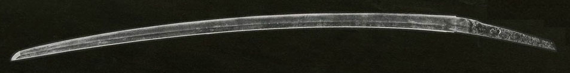

La Katana
|
|
La Katana |
|
La spada del Giappone medievale |
Recensione di una delle spade più famose e conosciute al mondo
La Katana!
La Katana è un'arma antica con una storia che rispecchia in pieno la particolarissima cultura giapponese.
In occidente ha acquisito un'aureola quasi mitica, da molti viene erroneamente considerata la spada "perfetta" e questo a discapito delle analoghe lame occidentali che vengono, a torto, ritenute inferiori da ogni punto di vista. In realtà la Katana va smitizzata e vista per quello che è realmente.
Per comprendere la nascita della Katana e la sua evoluzione bisogna necessariamente esaminare la storia della cultura che l'ha prodotta.
Il Giappone è un'isola posta letteralmente ai confini del mondo, questa sua posizione defilata gli ha permesso di autoescludersi dal mondo esterno, di conseguenza se questo da un lato ha limitato il progresso tecnologico e tecnico, dall'altro lato ha permesso di raffinare e specializzare al massimo determinate arti, una delle quali è l'arte della forgiatura delle spade. Di conseguenza ecco che le spade giapponesi hanno mantenuto più o meno le stesse proporzioni e la stessa conformazione nell'arco dei secoli senza beneficiare dello sviluppo in termini di geometria, bilanciamento, paramano e proporzioni che hanno invece caratterizzato le corrispettive armi occidentali. In pratica in Giappone, per dei secoli, ci si è dedicati al perfezionamento di un singolo tipo di spada, migliorandone ossessivamente la fattura e sviluppando le tecniche metallurgiche alla continua ricerca della perfezione.
Il risultato di tutto questo lavoro secolare è un'arma straordinaria, la Katana.
|
|
Katana e Tachi
Spesso si fa confusione fra questi due termini. In Giappone, la parola "Katana" significa semplicemente "Spada", per cui anche una spada occidentale viene chiamata Katana, ciononostante, si è presa la consuetudine di indicare con quel termine anche un tipo particolare di spada, comparsa in Giappone intorno al periodo Muromachi (1350) e che sarebbe stato in realtà più corretto chiamare "Uchigatana". La spada nipponica ha attraversato infatti tre lunghi periodi nei quali ha preso altrettanti nomi:
1. Joko-To (...-782): Le JokoTo sono le spade più antiche, forgiate in epoca arcaica, rettilinee, ad un solo taglio e senza curvatura, ad imitazione delle spade cinesi.
2. Tachi (782-1350) : I Tachi, nel periodo Heian, sostituirono progressivamente le JokoTo, hanno una lama lunga che solitamente si attesta sui 75-80 cm e sono dotati di una notevole curvatura (sori) accoppiata ad un adeguato assottigliamento distale (fumbari) che li rende relativamente leggeri nonostante la loro lunghezza. Nel fodero, vengono portati col filo verso il basso. I Tachi sono armi concepite per la cavalleria, sono progettate per colpire di taglio strisciando sul bersaglio in modo da causare il massimo danno col minimo sforzo. Moltissimi Tachi, nei secoli successivi, furono accorciati e trasformati in Uchigatana. Le lame forgiate nel periodo d'oro della spada giapponese (il Kamakura) sono nate tutte come Tachi e in seguito convertite in Uchigatana.
3. Uchigatana (1350-oggi): L'Uchigatana, detta anche semplicemente "Katana", ha iniziato a sostituire il Tachi a partire dal Muromachi per poi sostituirlo completamente nei periodi successivi. L'Uchigatana possiede una lama lunga normalmente 60-75 cm con una curvatura e un assottigliamento distale minori rispetto ai Tachi, nel fodero viene portata col filo verso l'alto per facilitare l'estrazione e per non danneggiare il filo della lama. Sebbene sia possibile usarle da cavallo, sono essenzialmente armi concepite per la fanteria.
Le migliori Katane della storia
Una delle cose che rendono particolarmente affascinante lo studio delle lame giapponesi è che le migliori Katane mai forgiate, a tutt'oggi, sono quelle del periodo antico e cioè le spade realizzate circa 700 anni fa. In seguito i segreti dei maestri forgiatori si sono persi e solo di recente ci si è sforzati di recuperarli, ma nonostante tutto, ancora oggi non si riesce a riprodurre lame di qualità paragonabile a quelle del mondo antico.
Grosso modo, le Katane possono essere così suddivise in base al periodo:
Joko-To (645-980) Spade antichissime progenitrici della Katana a lama dritta.
Koto (980-1600) Spade antiche, le lame migliori in assoluto, inizialmente erano Tachi, poi sostituiti progressivamente dall'Uchigatana, detta anche "Katana".
Shinto (1600-1867) Spade nuove, prodotte in periodo di pace, corte, leggere, appariscenti e di minore qualità
ShinShinto (1868-1912) Spade nuovissime, in questo periodo si tenta di riscoprire i segreti delle spade Koto per produrre nuovamente lame di qualità
Gendaito (1912-oggi) Spade moderne, costruite nel primo 900 per i collezionisti e per i templi (relativamente poche in verità)
Gunto (seconda guerra mondiale) Spade prodotte industrialmente per gli ufficiali dell'esercito della seconda guerra mondiale, di bassissima qualità
Shinsakuto (oggi) Spade contemporanee prodotte oggigiorno, sono grandi e appariscenti, costano molto.
Storia della Katana
Joko-To (prima del 980) Queste spade antichissime sono costruite con una tecnologia importata dalla Cina. Hanno un valore storico, ma sono ancora ben lontane dalle Katane in termini di qualità costruttiva. Sono diritte e forgiate con la tecnica di tempratura differenziale.
|
|
Heian (782-1180, Koto) Verso la metà di questo periodo, e cioè intorno al 980, inizia il periodo detto Koto, il periodo della Spada Antica. Le lame non possono dirsi ancora delle vere Katane, ciononostante iniziano a comparire le caratteristiche tipiche delle stesse, compare la curvatura a sciabola e le tecniche metallurgiche si affinano. Si tratta perlopiù di spade lunghe costruite per essere usate da cavallo e portate in montatura Tachi (e cioè portate col filo rivolto in basso).
|
 |
Kamakura
(1181-1330, Koto) Questo periodo è universalmente considerato il Periodo
d'Oro della spada giapponese, da questo momento i samurai presero il potere
in Giappone e lo mantennero fino alla caduta del feudalesimo con
l'arrivo degli occidentali nel 1868 (in questo periodo visse il più famoso forgiatore
di tutti i tempi, Masamune).
Il Giappone dovette affrontare i due
tentativi di invasione mongola che si risolsero in vittorie soltanto per
via della distruzione della flotta mongola da parte di
altrettanto provvidenziali tempeste.
I samurai, come spesso capita alle comunità chiuse e isolate, avevano
ritualizzato gran parte della propria vita, guerre comprese e si trovarono spiazzati di fronte al nemico continentale
che concepiva un tipo di guerra senza regole, molto più cruento e diretto. Infatti
all'epoca, era normale per un samurai, prima della battaglia, presentarsi
agli avversari elencando il proprio albero genealogico e le cose importanti
che avevano fatto i propri antenati o loro stessi, in questo modo si
formavano le coppie per i duelli, in base al rango e all'importanza di
ognuno che a loro volta avvenivano in maniera "onorevole" senza aiuti da
parte dei compagni. A volte capitava, addirittura, che l'esito di uno scontro
venisse deciso da un singolo duello.
A quel tempo, le spade giapponesi avevano una foggia lunga e curva, con un notevole assottigliamento distale (fumbari)
che le rendeva leggere e manovrabili a cavallo con una mano sola.
Quando però giunsero i mongoli, essi portarono con se corazze di tipo
continentale, di cuoio indurito e ricoperto da scaglie metalliche. I samurai
dovettero rendersi conto di una terribile realtà: le loro spade erano
inadeguate contro codesti avversari, non tagliavano abbastanza e non erano
in grado di avere ragione delle corazze nemiche.
Questi furono anni di grande fermento, lo Shogun e i signori feudali fecero
grandi sforzi per tentare di rendere competitive le Katane del proprio
esercito, furono incentivati e radunati i migliori forgiatori e la ricerca
in questo ambito raggiunse livelli mai visti prima.
Le vecchie tachi del periodo heian vennero modificate e migliorate da ogni
punto di vista e la tecnologia per la forgiatura delle spade divenne una
vera e propria arte.
Vennero sviluppate metodiche che prevedevano l'utilizzo di diversi tipi di
acciai, uniti tra loro in modo da conferire differenti proprietà alle
diverse parti della lama. Anche la geometria delle stesse venne cambiata,
vennero sperimentati differenti modelli di punta (kissaki) e differenti
modalità di tempratura allo scopo di garantire un tagliente particolarmente
duro e persistente a fronte di una grande elasticità del corpo.
Verso la fine del Kamakura le spade avevano raggiunto un livello qualitativo
eccezionale. Nel corso del secondo tentativo di invasione mongola,
nonostante i giapponesi si trovassero comunque a mal partito, i cronisti
mongoli rimasero colpiti dalla brutale efficienza delle nuove Katane e a riguardo
uno dei loro commentatori scrisse: "ogni volta che una delle loro lame scintillanti
viene sollevata
in aria e riabbassata, sono tre morti tra i nostri".
Il Giappone si preparò quindi a fronteggiare una
terza invasione mongola (che però non si verificò mai) cercando di migliorare
ulteriormente la fattura delle spade.
In questo periodo le lame venivano create allo scopo di essere usate in
battaglia per cui hanno pochi fronzoli; fu in questo periodo che nacquero le famose 5 Scuole, corrispondenti ad altrettante zone di
estrazione mineraria.
Le spade del Kamakura, in origine, erano tutte lame lunghe in montatura Tachi
(da portare col filo rivolto verso il basso), ma nei secoli successivi la
maggior parte di queste venne accorciata e convertita in Uchigatana (da
portare col filo rivolto verso l'alto), sia per ragioni legislative (delle
ordinanze dello Shogun imposero dei limiti alla lunghezza delle spade) sia
per ragioni pratiche dato che iniziava a prendere sempre più piede la figura
del samurai appiedato, che necessita di una spada più corta e agile.
rispetto alla sua controparte a cavallo.
Verso la fine dell'epoca Kamakura l'imperatore tentò di rovesciare lo
shogunato, indebolito dalla guerra contro i mongoli e di riprendere il potere. Ci riuscì, ma uno dei suoi alleati alla
fine gli si rivoltò contro, il risultato fu uno scisma dinastico e così, nel
periodo successivo, il Giappone ebbe due corti imperiali.
Le 5 Scuole (Gokaden)
Yamashiro
La lame Yamashiro sono relativamente poco numerose rispetto alle lame prodotte dalle altre scuole, sono eleganti, lunghe e leggere, snelle e slanciate; presentano un apprezzabile affusolamento distale (fumbari) allo scopo di ridurne il peso. Il famoso Rai Kunitoshi apparteneva a questa scuola.
|
|
Yamato
La scuola Yamato è la più antica delle cinque tradizioni, è rappresentata per lo più da maestri forgiatori legati ai templi, essi realizzavano katane per i monaci guerrieri, per cui esse rispondono unicamente a fini pratici, raramente sono firmate e hanno pochi fronzoli. Le lame Yamato, nel complesso, sono abbastanza simili alle Yamashiro, hanno comunque una costola più spessa per aumentare la resistenza della spada, anch'esse non sono numerosissime. Il migliore allievo di Masamune Go Yoshihiro (nella foto) ne è un eminente esempio.
|
|
Bizen
Nella antica provincia di Bizen furono costruite oltre il 70% di tutte le spade nipponiche. La tradizione Bizen è forse la più nota e rinomata, le Katane prodotte a Bizen presentano una notevole varietà in termini di stile, sono comunque solitamente belle ed eleganti e presentano spesso una caratteristica curvatura il cui centro è spostato verso l'impugnatura e che prende il nome appunto di "curvatura Bizen" (Bizen Sori). Sono anche le più imitate oggigiorno.
|
|
Soshu
Le lame forgiate secondo i dettami della scuola Soshu sono lunghe, pesanti e spesse, adatte alla vera guerra più che al duello. Masamune (nella foto) apparteneva a questa tradizione.
|
|
Mino
A Mino furono prodotte moltissime lame, fu seconda solo a Bizen in questo, le linee guida della scuola Mino prevedevano lame votate alla battaglia, lunghe e massicce, simili alle Soshu.
|
|
In ogni caso sarebbe sbagliato ritenere queste definizioni come qualcosa di schematico e chiuso, infatti erano frequentissime le contaminazioni tra stili e non è infrequente trovare, ad esempio, una lama Mino in stile Yamashiro e via così. Vi sono altresì alcune tradizioni derivate (wakimono) che esulano dalle 5 scuole e che presentano stili che pescano un pò di qua e un pò di là tra le varie scuole.
Nanbokucho (1330-1389, Koto) Durante questo periodo, la rivalità delle due corti imperiali contrapposte faceva si che ognuna di loro cercasse di prevalere sull'altra anche in termini di mera ostentazione, per questa ragione le lame prodotte in questo periodo raggiungono dimensioni addirittura esagerate visto che vengono costruite anche allo scopo di impressionare.
|
|
Muromachi
(1390-1570, Koto) Tecnicamente parlando, il muromachi comprende anche
il periodo precedente (il nanbokucho). Durante il muromachi, lo shogunato perde via via
potere a scapito dell'imperatore stesso e dei molti signori feudali che
spesso gli si rivoltano contro, questa situazione apre la strada ad un
periodo di guerra totale che durerà quasi un secolo. A metà del Muromachi
inizia infatti l'era Sengoku (1467-1568) un periodo di guerra detto "Periodo
degli Stati Combattenti". In questa fase vi sono grandi scontri tra eserciti
e la produzione di spade ne risente; la produzione di massa abbassa
necessariamente la qualità delle lame che ora non vengono più forgiate
soltanto per i
nobili e per i Daimyo, ma per le grandi masse dei
soldati. Per questa ragione le spade realizzate in questo periodo non vengono
quotate molto (ed è bene saperlo).
E' in questa fase storica che nasce la Katana, come noi la
conosciamo. Infatti oramai le guerre non vengono più combattute da
gruppi di Samurai a cavallo, ma da grandi eserciti di soldati a piedi.
Finisce quindi l'era dei lunghi Tachi e nasce l'era dell'Uchigatana cioè una Katana più
corta che si porta infilata nella cintura col filo rivolto verso l'alto, sia
per preservare il filo dal contatto col legno del fodero sia per facilitare
le tecniche di estrazione rapida.
|
|
Momoyama (1571-1647, Keicho-Shinto) Durante il periodo Momoyama, nel 1596 termina la lunga fase delle Katane Koto e inizia quella delle Katane Shinto. In questo periodo vengono combattute le guerre di riunificazione volte a riportare i vari signori feudali e i monaci dei numarosi templi alla totale obbedienza. Furono combattute, tra gli altri, dai cosiddetti "tre riunificatori" che ancora oggi sono eroi nazionali giapponesi: il grande generale e stratega Oda Nobunaga, il suo successore Hideyoshi Toyotomi e Ieyasu Tokugawa che infine conquistò il potere assoluto divenendo lo shogun di un Giappone ormai unito e pacificato.
|
|
Edo
(1648-1852, Shinto) Il Giappone esce dal lungo periodo di guerra
riunificato sotto lo Shogunato dei Tokugawa. In questo periodo avvenne qualcosa di più unico che raro nella storia del
mondo: Lo Shogun Yeyasu
Tokugawa, dopo essere giunto al potere anche grazie ai fucili di recente
importazione occidentale, ne vietò il possesso e la produzione in tutto il
paese allo scopo di mantenere al potere la casta dei samurai che gli era
necessaria
per mantenere la propria posizione (infatti con un fucile in mano anche un
contadino poteva diventare un terribile guerriero). Il Giappone rimase
quindi per altri due secoli ancorato al sistema feudale e, nonostante ciò, questo
periodo venne ricordato come uno dei più prosperi e pacifici di tutta la storia giapponese.
Anche le Katane cambiarono, ormai non più utilizzate in guerra, servivano in
pratica solo per i duelli e come status symbol, furono quindi man mano accorciate ed
alleggerite. Per facilitare le tecniche di estrazione rapida, la curvatura
delle lame venne cambiata, mentre negli antichi Tachi essa era maggiore in
prossimità dell'impugnatura, nelle nuove Katane, viene progressivamente
spostata verso la punta della lama.
In un primo tempo, le spade
prodotte continuano a rifarsi più o meno alle 5 Tradizioni, ma in seguito
iniziano a dissolversi in una miriade di stili stravaganti che perdono gli aspetti marziali per privilegiare quelli estetici ed ecco che
compaiono lame con Hamon floreali, con doppio filo, con doppio triplo
sguscio...
Sebbene nel periodo Shinto siano vissuti anche dei grandi
forgiatori, la maggior parte delle lame ivi prodotte è nettamente inferiore
in termini di qualità alle lame Koto. Sarebbe comunque sbagliato ritenere
che nel periodo Shinto le lame Koto non fossero più in circolazione,
infatti, a seguito all'editto dello Shogun che vietava di portare spade più
lunghe di 70 cm agli stessi samurai, molti appartenenti a questa casta
ricorsero al "suriage" e cioè alla pratica dell'accorciamento delle lame più antiche del
periodo Koto. Queste katane sono solitamente facili da riconoscere perchè
mantengono la linea curva elegante tipica dei tachi e presentano numerosi
fori a livello del codolo, indice dei successivi interventi di suriage.
Gli antichi Tachi venivano
accorciati a partire dal codolo (nakago) e trasformati in Katana, venivano
altresì praticati dei fori aggiuntivi per fissare la lama all'impugnatura.
Spesso questa procedura, che prende il nome di Suriage, comporta la perdita
della firma del forgiatore.
|
|
Le prime lame Shinto hanno ancora delle caratteristiche in comune tra loro e in qualche modo si rifanno alle 5 scuole.
|
|
Mentre in seguito compaiono le cose più strane (hamon floreali, kissaki lunghissimi, sgusci doppi o tripli e altre stramberie).
|
|
Un altro editto dello shogun impediva a chi non appartenesse alla classe dei samurai di portare lame più lunghe di 60 cm e così spesso questi ultimi si facevano costruire delle spade ai limiti del regolamento, per sembrare comunque dei samurai pur senza violare la legge. D'altro canto i samurai, che ormai non combattevano praticamente più, spesso si facevano costruire delle lame corte e leggere, comode da trasportare, per cui oggi risulta difficile distinguere tra i lunghi wakisashi (il wakisashi è la spada corta) e le corte katane dell'epoca.
Età Moderna (1877-oggi, Gendaito) Nel 1854 le "Navi Nere" del commodoro Mattew Perry costrinsero lo Shogun, sotto la minaccia delle armi, ad interrompere il tradizionale isolamento Giapponese e ad aprire trattative commerciali con i paesi esteri. Questi trattati commerciali, che ponevano il Giappone in una condizione di svantaggio, fecero crescere il risentimento della popolazione nei confronti dello shogunato che veniva visto ormai come incapace di rappresentare gli interessi del paese e così, nel 1877, termina il medioevo giapponese con la caduta dello shogunato dei Tokugawa e il ritorno del potere all'Imperatore Meiji.
Con la fine del medioevo, termina quindi il lunghissimo periodo dei Samurai, l'imperatore dichiarò estinta la loro casta e vietò di portare la katana come parte dell'abbigliamento al di fuori delle abitazioni. Le Katane vengono viste ormai come un inutile retaggio dell'antichità in contrasto con la modernizzazione proveniente dall'occidente, per cui vengono prodotte poche spade, perlopiù per i templi o per i ricchi collezionisti. Si tratta di lame di varia fattura, lo stile più imitato è lo stile Bizen con Hamon variegato.
|
|
Seconda Guerra Mondiale (1940-1945, Gunto)
Con la Seconda Guerra Mondiale, la propaganda
nazionalistica dà nuovamente valore alle spade che vengono prodotte in gran
quantità per gli ufficiali dell'esercito con materiali e tecniche scadenti.
E' stato addirittura usato il ferro dei binari della ferrovia per
realizzarle. Queste spade prendono il nome di
Gunto e hanno scarso valore,
ciononostante non è raro trovare qualche lama antica in montatura Gunto,
infatti capitava a volte che gli ufficiali preferissero andare in guerra con
la Katana di famiglia, tramandata da generazioni piuttosto che con una delle
lame di produzione industriale fornite dall'esercito.
Una caratteristica curiosa delle Gunto è la dragona e cioè il fiocco
ornamentale. Esso è stato introdotto a imitazione delle sciabole occidentali
usate dagli ufficiali, ma senza che ne venisse compresa la funzione.
Infatti, lo scopo originario della dragona era quello di, una volta infilata
al polso, assicurarvi saldamente la sciabola onde evitare di perderla in
caso di urto violento (la stessa funzione la troviamo oggi svolta dal laccio
delle moderne fotocamere digitali). Nelle Katane Gunto, invece, la dragona ha dimensioni esagerate
ed è inadatta alla funzione originaria, il che fa pensare che i giapponesi
abbiano visto nella stessa una semplice funzione ornamentale senza
comprenderne il vero significato.
|
|
Età Contemporanea (Shinsakuto) Tecnicamente parlando, anche le spade prodotte ai giorni nostri sono delle Gendaito, ciononostante si utilizza il termine Shinsakuto riferendosi a Katane prodotte secondo tecniche tradizionali da un forgiatore ancora vivo. Le Shinsakuto vengono prodotte sotto il controllo governativo che impone ad ogni maestro la produzione di non più di tre spade al mese. Di conseguenza queste ultime sono molto costose, vengono prodotte per i ricchi collezionisti e tendono quindi a seguire le richieste di mercato. In virtù di ciò si tratta spesso di Katane molto appariscenti, solitamente in stile Bizen, grandi e pesanti e con Hamon sgargianti, votate più ad impressionare con la loro imponenza che a portare i colpi fulminei che uno scontro reale richiederebbe.
|
|
Il governo giapponese, nell'ottica di preservare l'antica cultura della Katana, ha istituito il NBTHK che si occupa di valutare e registrare tutte le spade giapponesi originali o che, oggigiorno, vengono prodotte mediante le tecniche tradizionali. Il NBTHK, dopo aver esaminato una lama, rilascia un certificato di autenticità in cui viene indicato il periodo di fabbricazione, la scuola di appartenenza e, in alcuni casi, anche il nome del maestro forgiatore. Ovviamente disporre di un certificato NBTHK è un notevole valore aggiunto per una Katana.
Come si pronuncia la parola Katana?
Il giapponese è una lingua molto particolare, la sua provenienza è, ovviamente, cinese ed è da quest'ultima che ha mutuato le sue caratteristiche, tra cui quella di costruire i termini dall'unione di semplici sillabe ognuna delle quali dotata di un preciso significato. In giapponese, avendo ogni sillaba uguale importanza, non esiste l'accento come noi lo intendiamo, per cui la dizione classica "Katàna" è da considerarsi errata. Per noi occidentali, una parola priva di accento tende ad apparire come accentata sull'ultima sillaba ed è così infatti che le parole giapponesi andrebbero pronunciate, ma cercando comunque sempre di far percepire al minimo l'accento. La parola andrebbe recitata come se si pronunciassero sillabe separate: Kà-Tà-Nà insomma. E questo vale per tutte le altre parole, come Kà-Rà-Tè, Hà-Rà, Kà-Mì, etc.
Per quel che riguarda poi il genere (il maschile e il femminile), in giapponese semplicemente non esiste, per cui, dire "Il Katana" o "La Katana" è più o meno indifferente, in ogni caso, per assonanza, sembra più coerente dire "La Katana" visto che la sua traduzione in italiano diventa "La Spada" e visto che il termine Katana finisce con la lettera "A" tipica terminazione dei sostantivi di genere femminile.
Leggende sulle Katane
|
|
I Samurai attribuivano un'anima
alle proprie spade, si diceva che l'anima del forgiatore venisse trasmessa alla
lama e che anche i proprietari successivi ne influenzassero le inclinazioni, per
questa ragione la katana posseduta da un uomo malvagio ne ereditava le
caratteristiche e diventava lei stessa portatrice di dolore e sventura.
Le spade prodotte da Masamune, il più grande forgiatore della storia, si diceva
che portassero prosperità e benessere, mentre le lame costruite da Muramasa, un
altro grandissimo maestro spadaio, venivano considerate portatrici di guerre e
di rovina.
Ieyasu Tokugawa, l'artefice della riunificazione del Giappone e primo shogun del
periodo Edo, un giorno si ferì mentre maneggiava una spada di Muramasa. Visto
che già diversi suoi amici e parenti erano stati uccisi dalle lame di Muramasa,
si convinse che quel tipo di spada portasse una maledizione nei confronti della
sua famiglia e proibì del tutto il possesso delle lame di Muramasa. Si trattava
comunque di spade eccezionali, per questa ragione molti samurai esitarono a
disfarsene e utilizzarono uno stratagemma: cancellarono il "Mura" dalla firma e
aggiunsero "Mune" a seguire, trasformando così la firma da "Muramasa" a "Masamune".
C'è un altra terribile leggenda
legata alle lame giapponesi. Si dice che, una volta che una katana abbia
assaggiato il sapore del sangue... ne voglia ancora.
Questo in realtà ha un senso, infatti un praticante distratto al punto da
ferirsi o ferire involontariamente qualcuno con la propria spada, è verosimile
che sia a rischio di compiere lo stesso sbaglio più di una volta. Insomma,
secondo me, non si tratterebbe tanto dell'anima della spada, quanto piuttosto della
stupidità del praticante.
|
|
Il termine Samurai significa
"colui che serve" ed in effetti è così che nacquero in origine, uomini d'arme
che offrivano i propri servigi ai signori feudali. Oggi al termine Samurai la
maggior parte della gente associa concetti come l'onore, il sacrificio, la
dedizione e la grande abilità nell'uso della spada. In realtà, in origine, le
cose erano molto differenti.
Prima della riunificazione del Giappone da parte dei Tokugawa e cioè nel periodo
più turbolento del medioevo giapponese, i samurai altro non erano che dei
guerrieri come gli altri, uomini spesso disposti a tutto pur di ottenere la vittoria,
pronti ad attaccare un nemico anche in 10 contro uno se si fosse reso
necessario.
Quando però le guerre finirono, i Samurai dovettero adattarsi alla vita civile e
si trasformarono progressivamente in funzionari statali.
Ovviamente, con la pace, scomparve la possibilità di allenarsi negli
accampamenti militari e di combattere sui campi di battaglia; i Samurai
iniziarono quindi ad allenarsi nelle palestre (Dojo) e sorsero innumerevoli
scuole di scherma.
Anche la disciplina militare dovette essere sostituita da qualcos'altro ed ecco
quindi che fu introdotto il Bushido (letteralmente:
"la via del guerriero") che può essere considerato una specie di codice di
condotta etica e morale del Samurai.
La scherma con la Katana
Una cosa curiosa della scherma
giapponese è che essa non ebbe uno sviluppo concomitante a quello della spada,
infatti durante il periodo d'oro della katana, l'unica strategia di
combattimento consisteva nell'avvicinarsi e nel colpire. A posteriori tutto ciò è paradossale: i samurai
del Kamakura disponevano delle
migliori lame mai costruite, ma non possedevano l'abilità per utilizzarle.
A quel tempo, se pure capitava che i duelli fossero iniziati con i lunghi Tachi,
essi venivano quasi sempre proseguiti e terminati con il Tanto (il pugnale),
infatti il Tachi è un'arma decisamente troppo lunga per essere utilizzata in
maniera efficace in un duello.
Fu nel periodo successivo, con la riunificazione del Giappone e l'inizio dell'era di pace dei Tokugawa che nacquero e si svilupparono le numerose scuole di Kenjutsu che elevarono a forma di arte il combattimento con la Katana. Venne anche introdotta l'arte dello Iaijutsu che consisteva nell'estrarre la spada e nel colpire l'avversario con un unico movimento, l'arte del concludere il combattimento prima che fosse iniziato.
Inizialmente le spade erano armi da usarsi a cavallo e alle prime lame (gli antichi Tachi) veniva conferita una foggia lunga e ricurva in modo da poter colpire soprattutto di taglio con dei fendenti che strisciavano sul corpo dell'avversario. Il bilanciamento era arretrato, infatti, da cavallo, la spada veniva brandita con una mano sola e non era possibile imprimerle una grande energia cinetica, per cui il taglio veniva reso efficace dalla lunga strisciata piuttosto che dalla potenza del colpo. Questo tipo di approccio però, contro i mongoli, non si rivelo sufficiente ed obbligò i maestri forgiatori a studiare soluzioni alternative.
In
seguito la Katana divenne un'arma da fanteria, venne accorciata e inspessita
(nel suo complesso alleggerita) e
la sua curvatura ridotta e spostata verso la punta in modo da facilitare
l'estrazione rapida, ciononostante i fendenti di taglio rimasero l'utilizzo
primario, anche se vennero introdotte le stoccate, le parate e tutto un insieme
di colpi dritti e rovesci con rapidi cambi di direzione impensabili col lungo e
ingombrante tachi.
In tempo di pace la katana venne ulteriormente alleggerita in modo da rendere la
lama più comoda da portare, ma anche più rapida ed efficace nei duelli senza
armatura. Nonostante questo, la katana non subì, come accadde in occidente, una
progressiva trasformazione in arma da duello civile, essa infatti, anche nei
periodi di pace, rimase sempre concepita come arma da guerra.
La scherma con la katana è improntata essenzialmente alla rapidità e alle finezze tecniche e stilistiche. Ci si allena a colpire i punti giusti (le articolazioni soprattutto) con forza, velocità e precisione. Inizialmente per l'allenamento si utilizzava il Bokken, un bastone di legno sagomato a forma di spada, ma in seguito ci si accorse che esso causava comunque un gran numero di incidenti per cui venne sostituito dallo Shinai, un bastone composto da quattro listarelle di bambu tenute insieme da dei legacci. Lo Shinai è del tutto privo di capacità offensive e permette quindi di portare le tecniche a piena velocità senza preoccupazioni di sorta.
|
|
La differenza fondamentale tra
la scherma occidentale e la scherma con la Katana è che, in occidente, c'è
sempre stata l'idea di difendere e attaccare contemporaneamente, ed infatti la
spada veniva usata con una mano sola mentre l'altra mano veniva impiegata per
tenere lo scudo o semmai una lama più corta da usare per le parate. Le spade a due
mani sono entrate nell'arsenale dei cavalieri soltanto dopo il perfezionamento
delle armature che, proteggendo ormai alla perfezione ogni parte del corpo,
rendevano praticamente inutile lo scudo.
Al contrario, in Giappone, c'è sempre stata una netta predilezione dell'attacco
sulla difesa. La Katana viene generalmente tenuta con entrambe le mani, il che
ne aumenta forza e velocità, il tutto a scapito della difesa. Le finte e le
stesse parate,
venivano spesso considerate disdicevoli.
Il samurai, per colpire l'avversario, offre il suo stesso corpo a bersaglio. C'è
un antico detto che riassume questo concetto: "Lasciar tagliare la mia pelle e
tagliare la carne, lasciar tagliare la mia carne e tagliare le ossa".
Fondamentalmente la katana nasce
come arma a due mani e la lunga impugnatura (koshirae) ne è la prova lampante.
Ciononostante, alcune scuole svilupparono delle tecniche che consentivano di
usare contemporaneamente due spade, una per mano. In questo caso la seconda
spada altro non era che il Wakisashi, cioè la spada corta (sotto i 60 cm) che i
samurai portavano sempre con se e che, insieme alla katana costituiva il
cosiddetto "Daito". Il Wakizashi veniva anche detto "il guardiano dell'onore" e,
al contrario della katana, non doveva essere depositato all'ingresso delle
abitazioni durante una visita ma poteva essere portato con se.
Rimane comunque evidente che una simile tecnica di combattimento, che prende il
nome di "scuola dei due cieli", si adatta soprattutto ad uomini particolarmente
forti, infatti, sebbene la katana non sia una spada particolarmente pesante,
l'utilizzo della stessa con una mano sola ne penalizza in modo notevole la
rapidità e la potenza dei colpi.
Qualcuno potrebbe essere indotto
a fare un paragone tra la tecnica occidentale "Striscia e Daga" e quella della
"Katana e Wakisashi", ma in questo caso le cose sono molto differenti, infatti
la Striscia occidentale è una spada lunga, leggera e specificamente concepita
per l'uso con una singola mano, per cui la daga non ne penalizza in alcun modo
l'efficacia, cosa che non si può dire invece per la katana, ecco perchè,
nonostante tutto, la maggior parte delle scuole di scherma con la katana
abitualmente non utilizzano questa doppia combinazione.
Personalmente ho assistito a duelli in cui uno dei
contendenti, armato di Katana si trovava ad affrontare una Striscia
rinascimentale occidentale. A volte, il duellante armato di Katana veniva indotto,
ad imitazione dell'avversario, ad impugnare la sua spada con una mano sola e a
disporsi di fianco, in modo da aumentare al massimo il raggio d'azione della sua
arma e in modo da esporre il bersaglio minore possibile per tentare di competere
con la ben più lunga Striscia. Praticamente in tutti i casi la manovra è risultata fallimentare e questo per diverse
ragioni: una Katana non potrà mai competere in lunghezza con una Striscia e la
sua maggiore massa finisce per impacciarne i movimenti rendendoli goffi e lenti
se paragonati a quelli dall'avversario.
Al contrario, risultati decisamente migliori si sono ottenuti nei casi in
cui il "Samurai" non si è lasciato prendere dall'impulso di copiare la tecnica
avversaria, ma ha continuato a combattere nello stile classico della
Katana e cioè tenendola con entrambe le mani.
In questo caso è pur vero che il raggio d'azione risulta inferiore rispetto a quello
di una Striscia, ma è altrettanto vero che la potenza e la massa della
Katana finiscono per prevalere in maniera abbastanza netta e anche il vantaggio
della velocità che la Striscia detiene va assottigliandosi, consentendo quindi
al Samurai di
rimettersi in gioco; diventa quindi possibile, ad esempio, intercettare la lama avversaria e
sbalzarla via per poi accorciare le distanze e portare un colpo di taglio.
Oriente contro Occidente
Mentre le spade europee venivano continuamente messe alla prova dallo scontro con avversari diversi (dai magiari ai mori per dirne un paio) che disponevano di armi e armature molto diverse ed in pressochè continua evoluzione, in un Giappone medievale, posto ai confini del mondo e separato dal resto del continente da un ampio tratto di mare, gli avversari da combattere erano sempre figli della stessa cultura, per questa ragione, mentre la foggia delle armi occidentali nel corso dei secoli è cambiata moltissimo in termini di geometria, dimensioni, sezione, bilanciamento, paramano etc, le Katane giapponesi hanno mantenuto più o meno sempre le stesse caratteristiche mentre il miglioramento ha riguardato invece le tecniche di fattura che hanno via via migliorato la qualità dell'acciaio che ha così raggiunto livelli impensabili per le conoscenze dell'epoca. Nemmeno oggi, con tutte le conoscenze che abbiamo, siamo in grado di produrre una spada con le stesse caratteristiche delle antiche Katane.
In occidente, verso la fine dei lunghi secoli medievali, iniziò a farsi strada l'idea che potessero esistere spade ad uso esclusivamente civile, espressamente orientate ai duelli. Nacquero così le spade da lato e i lunghi Rapier il cui nome in spagnolo, "espada ropera" significa spada da portare con i vestiti, cioè, spada civile. In Giappone invece non ci fu mai questa distinzione e le Katane usate per i duelli, sebbene nei periodi di pace tendessero anch'esse ad alleggerirsi rispetto alle controparti più antiche, rimasero sempre degli oggetti concepiti ed orientati alla guerra.
Se mettiamo di fronte una striscia rinascimentale e una katana, la prima otterrà facilmente la vittoria in un duello civile con i contendenti privi di armature, mentre risulterà del tutto inutile in un ipotetico scontro armato. Ricordo personalmente di una sfida in cui uno dei contendenti, dotato di striscia e daga, riuscì agilmente a tener testa a ben tre katane.
In uno scontro militare le cose
cambiano, infatti le spade da duello occidentali sono assolutamente inadatte
allo scontro armato mancando di vera potenza in termini sia di taglio che di
affondo e non sarebbero in grado di perforare una pur leggera armatura nè di
aver ragione di un avversario munito di scudo.
In
questo caso, se si vuole fare un paragone, bisogna mettere a confronto con la
Katana le mano e mezze medievali e ciò equipara molto i contendenti essendo due tipi di arma abbastanza
simili per quel che riguarda le dimensioni e il peso. Ciononostante, la
geometria, il paramano
largo e la maggiore lunghezza di una mano e mezza tende a favorire quest'ultima
e, pur disponendo la katana di un acciaio di qualità superiore, tende
ad essere svantaggiata in un ipotetico scontro.
Un altro confronto che può
essere fatto tra oriente e occidente riguarda le tecnologie metallurgiche e la
qualità dell'acciaio.
E' cosa nota che l'acciaio delle Katane sia di superba fattura, ma nel dire
questo vanno tenute presenti diverse cose. In Giappone infatti, le sedi di
estrazione mineraria hanno sempre scarseggiato sia dal punto di vista della
quantità che della qualità, ciò costrinse i fabbri giapponesi a sviluppare e
raffinare oltremisura le tecniche metallurgiche per eliminare le numerose
impurità presenti nel materiale grezzo. Spesso come punto di partenza
addirittura si usava la nera sabbia ferrosa di alcune spiagge dalla quale,
tramite tutta una serie di procedure si otteneva l'acciaio adatto alla
forgiatura delle Katane. Quando poi arrivarono gli olandesi, essi portarono con
se da vendere, dell'acciaio che venne spesso e volentieri utilizzato per la
costruzione di spade, spesso addirittura, sul codolo (Nakago) di quelle Katane
veniva incisa una scritta che informava orgogliosamente come il metallo di
partenza fosse stato l'acciaio olandese. Come conseguenza di questa scarsità di
materiale, in Giappone, il poco acciaio disponibile venne sempre indirizzato
alla forgiatura ad alto livello delle lame da parte dei migliori forgiatori,
mentre per gli altri scopi meno nobili (ad esempio la costruzione di scudi e
armature) vennero utilizzati altri materiali meno nobili come il legno e
similari.
Al contrario, in occidente, l'acciaio fu un materiale che non scarseggiò mai, di
conseguenza esso fu utilizzato, accanto alla costruzione di lame di alto
livello, dedicate ai nobili o a chi potesse permettersele economicamente, alla
forgiatura di spade di basso livello e di scarsa qualità destinate alle truppe
comuni e all'assemblaggio di altre armi come la mazza ferrata oltre che alla
forgiatura di scudi e armature.
Nel confronto oriente-occidente, va quindi considerato il fatto che, mentre le
Katane giapponesi erano praticamente tutte di alto livello, le spade
occidentali, molto più numerose, spesso provenivano da officine di basso livello
i cui prodotti erano destinati alle milizie più povere e meno dotate
economicamente. Ciò non significa che, accanto ad esse, non esistessero officine
di alta qualità, in grado di produrre lame forgiate tramite la tecnica
dell'acciaio a pacchetti, simile al sistema giapponese che, unendo tipi di
acciaio diversi conferiva alle lame eccezionali doti in termini di durezza ed
elasticità.
Purtroppo poche di queste splendide spade sono pervenute fino a noi e questo per
due motivi fondamentali: il primo è che, in occidente, causa la notevole
abbondanza di giacimenti metalliferi che ne riducevano i costi di produzione, la
spada rimase sempre un utensile per chi che la utilizzava e non acquisì mai quel carattere di
sacralità che caratterizzò le rispettive controparti orientali. La conseguenza
fu che non appena le armi da fuoco soppiantarono le spade sul campo di
battaglia, queste furono abbandonate e dimenticate in soffitta invece di venire
tramandate di padre in figlio come accadeva in Giappone. La seconda ragione è di
natura temporale, infatti il medioevo giapponese fu un fenomeno relativamente
recente che terminò solo nel 1868 quando, ad opera degli USA, ebbe termine il
tradizionale isolamento economico-culturale del Giappone che aveva
caratterizzato un'Era, e che determinò in breve anche la caduta dello shogunato
e la fine del lunghissimo periodo di dominio dei Samurai, mentre l'epoca delle
spade occidentali terminò molto prima, il che fece sì che la maggior parte di
esse andasse perduta o distrutta.
 |
Anticamente, quando le spade
erano in uso per davvero e costituivano un anello importante della catena della
sopravvivenza, esse venivano forgiate in modo da combinarsi alla perfezione con
gli elementi con i quali dovevano avere a che fare, ad esempio prendiamo il
Gladio Romano. Esso doveva adattarsi ad uno stile di combattimento regolare, in
cui i legionari si schieravano in maniera ordinata in linee compatte ed erano
dotati di grandi scudi. In questo contesto, la spada doveva essere corta e
leggera, inflessibile e priva di ampio paramano, in modo da poter consentire
rapidissimi colpi portati spostando di poco lo scudo verso l'alto o il basso.
Una lama più lunga sarebbe stata troppo lenta, mentre un paramano troppo ampio
avrebbe potuto incastrarsi con lo scudo, altresì una lama flessibile avrebbe
reso difficile colpire in maniera efficiente un nemico dotato di corazza. Non
appena lo stile di combattimento iniziò a cambiare (l'ordinata battaglia romana
fu progressivamente sostituita da uno stile di combattimento in cui il singolo
tendeva a prevalere), i legionari furono altrettanto rapidi nel sostituire il
Gladio con la più efficiente, da quel punto di vista, Spatha.
Tutto questo per dire che, quando si va a valutare un tipo di spada, si deve
necessariamente prendere in considerazione nella sua totalità il contesto nel
quale le veniva richiesto di operare. Ecco perchè, per fare un esempio, non ha
senso confrontare e magari asserire la presunta superiorità di una spada lunga
su una corta e così via.
In conclusione, non ha senso cercare di dimostrare la presunta superiorità di una spada su di un'altra senza prendere in considerazione tutti i fattori che fanno da contorno allo scontro, infatti a seconda della situazione (scontro armato, avversario singolo o multiplo, grado di addestramento dei contendenti, terreno dello scontro etc.) una stessa lama, sia che si tratti di una Katana, di un Gladio romano o di un Rapier rinascimentale può risultare facilmente vittoriosa o sconfitta sul campo di battaglia.
Cavalieri vs Samurai
Spesso nelle discussioni da
salotto sull'argomento "katana" salta fuori la fatidica domanda: erano più forti
i Cavalieri o i Samurai? E come si sarebbe comportata una Katana di fronte ad
una Mano e Mezza medievale? Si tratta di un quesito a cui non è facile
rispondere, nella storia non ci sono grandi esempi di scontri tra Samurai e
guerrieri occidentali, ciononostante qualche contatto in tal senso c'è stato,
infatti nel XVII secolo ci furono delle piccole battaglie tra portoghesi e
samurai giapponesi. I cronisti portoghesi rimasero stupiti dalla qualità
dell'acciaio delle lame giapponesi e scrissero che esse erano talmente affilate
da riuscire a tagliare persino le loro armature.
D'altro canto, le corrispondenti cronache giapponesi riferirono, con analogo
stupore, che le armature portoghesi erano così robuste che nemmeno le loro spade
riuscivano a penetrarle.
Un altro limitato contatto vi fu nel tardo medioevo nipponico in seguito all'apertura dei contatti diplomatici da parte del Giappone; alcune Katane vennero portate in dono da parte delle delegazioni diplomatiche, esse furono sempre molto apprezzate per la qualità eccelsa dell'acciaio.
Riproduzione o originale?
Una delle domande che chi si appresta a comprare una Katana generalmente si pone è questa: è meglio comprare una riproduzione moderna o spendere di più per procurarsi un originale storico? Riguardo a ciò ci sono da dire diverse cose. Al momento, sul mercato, si possono trovare 6 tipi di Katana.
1. Katane decorative. Sono
lame sbilanciate, con codolo saldato, in acciaio inox o altra lega del tutto
inadatta alla costruzione di spade. Queste lame sono pigre in mano e non
reggerebbero ad uno scontro vero perché si spezzerebbero dopo pochi colpi. Il
codolo saldato rende la lama estremamente debole a livello dell'impugnatura e,
roteando la spada, c'è il rischio che la lama "parta" staccandosi dal resto
dell'impugnatura. L'acciaio Inox, a sua volta, rende la spada
troppo dura e fragile e fa sì che rischi di spezzarsi a seguito di impatti anche
non particolarmente violenti. Infine il bilanciamento, eccessivamente avanzato,
fa sì che esse siano lente nei cambi di direzione e stanchino le braccia durante
l'allenamento. La linea di tempra (hamon) è sempre falsa, viene disegnata con
l'acido o con una fresa.
Insomma il loro posto è sopra il caminetto. A parte rari casi, costano molto
poco (100 euro). Spesso
i profani le trovano belle per le caratteristiche vistose che sfoggiano (dragoni
incisi, lucidature a specchio, koshirae vistosi), ma all'occhio di un esperto
appaiono solo ridicole. Su youtube c'è un
video di un
presentatore che, mentre tentava di venderne una per TV, per impressionare il
pubblico ha pensato bene di dare dei piccoli colpi contro il pianale del tavolo, al
terzo colpo la lama si è spezzata ferendolo e mettendo in imbarazzo tutto lo
studio (era una diretta).
|
|
2. Katane da pratica di basso livello. Queste sono lame in acciaio al carbonio, adatte alla pratica e costruite con tecnologie moderne. Ovviamente l'acciaio è nettamente inferiore in termini di prestazioni a quello delle Katane forgiate e temprate secondo il metodo tradizionale, in ogni modo resistono agli urti e possono essere usate tranquillamente per la pratica, anche in guerra non sfigurerebbero troppo nonostante tutto. Purtroppo queste lame sono in genere eccessivamente pesanti e sbilanciate in avanti. Costano relativamente poco (300 euro). Negli ultimi anni la qualità media di queste spade è progressivamente migliorata.
|
|
3. Katane da pratica di alto livello. Queste spade sono spesso costruite con metodi semi artigianali che ricalcano le antiche metodiche o con acciai moderni ad alte prestazioni che non esistevano nel medioevo giapponese e che garantiscono performance particolarmente elevate. Un paio di esempi possono essere la Paper Crane della Hanwei, costruita secondo il metodo tradizionale coadiuvato dalle moderne tecnologie (ad esempio i battitori meccanici) o la Praying Mantis costruita a partire dal super acciaio L6 che, combinato alla tempra bainitica di nuova concezione, garantisce una resilienza superiore persino a quella delle Katane antiche. Nonostante tutto però, la qualità complessiva degli esemplari storici (durezza del filo, persistenza del tagliente, bilanciamento, leggerezza, resilienza) non è ancora stata raggiunta da nessuna riproduzione moderna. Costano abbastanza (2000 euro).
|
|
4. Katane Nihonto moderne costruite su ordinazione (dove per "nihonto" si intende una Katana forgiata secondo i metodi giapponesi tradizionali). Tecnicamente si chiamano Shinsakuto, si tratta di Katane costruite, oggi, da maestri che seguono in tutto e per tutto le antiche tradizioni. In genere costano tantissimo (20.000 euro). Sono spesso lame grandi, lunghe e larghe e con hamon vistosi dato che tendono a seguire i desideri e le aspettative dei collezionisti odierni che, perlopiù, desiderano acquistare qualcosa di imponente e impressionante. Tutto ciò rende molti di questi, pur splendidi, manufatti più adatti all'esposizione che al combattimento.
|
|
5. Katane Nihonto storiche. Queste spade sono gli originali storici e il loro valore e qualità varia moltissimo a seconda del periodo di fattura, dello stato di conservazione e del maestro forgiatore. Di sicuro queste Katane hanno un fascino particolare che le precedenti non hanno, tenerle in mano significa tenere in mano un pezzo di storia. Una Katana Koto del 1300 ha visto gli antichi scontri tra i cavalieri del Kamakura, i grandi eserciti di Samurai appiedati del periodo dei regni combattenti, gli assalti notturni dei ninja, le grandi manovre militari di Oda Nobunaga, i primi fucili sul campo di battaglia e poi l'insediamento al potere di Yeyasu Tokugawa e il lunghissimo periodo medievale che ne è seguito, i duelli tra samurai, infine ha visto la bomba atomica, il Giappone moderno e l'era di internet. Insomma, sicuramente le Nihonto storiche hanno qualcosa che manca del tutto alle precedenti. Il loro costo varia dalle poche migliaia di euro alle decine di migliaia per una Katana attribuita ad un forgiatore famoso fino all'inestimabile per alcuni esemplari di particolare pregio o con una storia importante dietro.
In ogni modo, se non si cerca per forza una firma famosa, si possono trovare delle nihonto antiche in buone condizioni certificate NBTHK a prezzi ragionevoli (2000-4000 euro), infatti, per fortuna, in Giappone le spade vengono da sempre tramandate da padre in figlio e curate come tesori di famiglia, per cui un gran numero di Katane ha attraversato i secoli giungendo fino a noi senza subire danni.
|
|
6. Katane falsificate.
In questa categoria si trova di tutto. Già nel Giappone feudale era molto in
voga l'usanza di falsificare le firme dei forgiatori famosi. A volte si trovano
addirittura lame con una firma falsa (Gimei) realizzate da forgiatori che, col tempo,
hanno acquistato una reputazione superiore a quella della firma stessa che
andavano a falsificare.
A volte lo
Shogun stesso donava una "Masamune" ad un Samurai che gli aveva reso un servigio
particolarmente importante. Purtroppo le lame di Masamune anche nei tempi andati
erano decisamente rare, cosicché ci si rivolgeva a dei fabbri esperti nel
riprodurre lame che assomigliassero esteticamente a quelle dei grandi nomi.
In questi casi, il falso veniva ritenuto autentico e tramandato come un tesoro
di generazione in generazione, per via della particolare cultura giapponese, era
molto difficile che un amico, anche nel caso sospettasse qualcosa, rivelasse al
possessore la verità sull'autenticità della spada. Dopo la seconda guerra
mondiale, quando molta gente, pressata dalla miseria, tentò di rivendere le
spade di famiglia, in più di un caso ci furono brutte sorprese per l'ultimo
discendente di una casata di Samurai che scopriva all'improvviso che il tesoro
di famiglia, donato ad un proprio avo dallo Shogun e tramandato per 300 anni di
padre in figlio, altro non era che un pezzo di ferro privo di valore.
Ancora oggi, naturalmente, esistono casi analoghi, la differenza è che ora non ci si limita a tentare di falsificare le lame dei forgiatori più famosi, ma l'industria del falso si è estesa a tutti livelli e così ecco che una banale lama da esposizione priva di valore viene spacciata per lama "battle ready", una Gunto realizzata con i binari della ferrovia viene passata per lama Shinto e una lama Shinto, opportunamente trattata può diventare una ben più preziosa lama Koto. Ci sono molti truffatori e truffati nel mondo delle Katane, e visto che, il più delle volte, è sufficiente una conoscenza basilare per distinguere le lame autentiche dalla patacche, è fortemente consigliato informarsi un pò prima di buttarsi nell'acquisto di una Katana.
|
|
Ecco un paio
di esempi abbastanza plateali di Katana falsificata. Nella prima la linea di
tempra differenziale (Hamon) è palesemente falsa, realizzata mediante
fresatura (orrenda), è altresì totalmente assente il puntale (Kissaki) e la
linea di tempra dello stesso (Boshi).
Nella seconda lama, invece, la linea di tempra è realizzata con la metodica
dell'incisione con acido che è più sofisticata e le conferisce un
aspetto più realistico, ma sempre super-falso ad un occhio un tantino
allenato; in ogni modo è del tutto assente la linea di tempra (Boshi) nel
puntale (Kissaki) ed è altresì del tutto assente la trama dell'acciaio (Hada),
trattasi di un fitto intreccio di linee e punti che compare come conseguenza
delle numerose ripiegature e non è falsificabile, per cui una Katana priva
di trama è sicuramente
falsa. Qui sotto si può osservare invece la trama (Hada) di una Katana
autentica, essa, al contrario delle trame falsificate, non è mai in rilievo,
cioè è visibile, ma la superficie rimane perfettamente liscia.
|
|
Lame come queste sono relativamente semplici da riconoscere anche per i non esperti, ma bisogna tenere presente che esistono anche spade fatte molto meglio, ad esempio una spada Shinto con il codolo (Nakago) invecchiato artificialmente e spacciata per lama Koto, per cui sarebbe buona prassi rivolgersi ad un esperto prima di effettuare un acquisto di un certo valore.
Negli anni passati c'è stato un brutto scandalo che è arrivato ad interessare perfino il NBTHK, l'organismo statale giapponese deputato alla verifica dell'autenticità delle Katane e che rilascia i certificati di autenticità; in pratica, in cambio di soldi, venivano rilasciati certificati fittizi a falsi d'autore. La cosa alla fine è venuta fuori, per fortuna, e l'intero organismo è stato riformato dalla base.
Spada o opera d'arte?
La risposta a questa domanda è
tutt'altro che scontata. Mille anni fa, quando le guerre in Giappone erano
all'ordine del giorno, le spade erano fondamentalmente considerate degli
strumenti per il combattimento. Col tempo però, iniziò a farsi strada nell'animo
degli stessi guerrieri che la spada potesse essere qualcosa di più di un
semplice arnese da lavoro.
Già nei tempi antichi, la forgiatura delle spade era un'arte particolarmente
difficile da apprendere e da praticare e anche i migliori spadai, in tutta la
loro vita, non riuscivano a produrre più di 20-30 katane il che le rendeva
estremamente costose. Quando poi i Samurai presero le redini del potere, la
Katana divenne il simbolo del loro status e si iniziò a pensare che fosse dotata
di uno spirito proprio, venne quindi esaltata e trattata con tutti gli onori e
il rispetto che si compete a qualcosa di sacro.
Nel mondo moderno, le Katane giapponesi continuano a stupire gli studiosi per la straordinaria fattura ed estetica che, ancora oggi, ne fa dei capolavori ineguagliati della metallurgia e che le ha portate ad essere considerate delle vere e proprie opere d'arte alla pari di un quadro o di una scultura.
Infatti, sebbene, ad un
primo sguardo, le Katane possano apparire più o meno tutte uguali, la realtà è
molto diversa. Ci sono letteralmente una miriade di parametri e di
caratteristiche che rendono ogni spada diversa dall'altra, dalle infinite
sfumature che può assumere la trama dell'acciaio (hada) alle ombreggiature della
linea di tempra (Utsuri) alle irregolarità di quest'ultima (Nie) alla forma
particolare del Boshi (la forma che assume la linea di tempra in prossimità
della punta) alla sezione della lama, alla curvatura, all'assottigliamento
distale, alla forma del codolo (Nakago) e così via.
Tutti questi parametri vengono utilizzati dagli esperti per valutare una spada,
datarla, attribuirla ad una data scuola o ad un dato maestro forgiatore e infine
stimarne la fattura ed il valore economico.
Con il tempo i due concetti di "spada", vista come
uno strumento per il combattimento e di "opera d'arte"
vista come un capolavoro di metallurgia e di estetica, si sono via via disgiunti
fino a perdersi di vista ed oggi abbiamo quindi gente che, pur essendo in grado
di valutare ogni sfumatura estetica di una Katana, non saprebbe sferrare con
essa nemmeno un colpo e viceversa.
A volte addirittura, capita che un esperto di entrambi i campi, dopo aver
ammirato gli aspetti estetico tecnologici di una spada, impugnandola ne
percepisca immediatamente l'impaccio nel brandeggio, la scarsa agilità e la
modesta potenza.
Questa disgiunzione estetico-funzionale è una
contraddizione che affligge oggi il mondo della Katana e che porta a dei
paradossi per cui, a volte, vengono ritenute capolavori delle spranghe di
metallo temprato e decorato, esteticamente splendide e di ottima fattura, ma
inadeguate in un vero scontro e, viceversa, capita che vengano valutate poco lame magari meno
appariscenti, ma veri gioielli di maneggevolezza, rapidità e potenza.
Il mio parere è che una Katana debba rimanere essenzialmente ciò che era in origine e cioè una spada e che tutto il resto debba venire dopo. Questo significa che, nella valutazione di una lama, le prime cose da guardare dovrebbero essere la leggerezza in proporzione alla lunghezza, il bilanciamento, la maneggevolezza, la forma della lama e la capacità di taglio. Tutto il resto (hamon, boshi, hada...) dovrebbe venire dopo, infatti, in uno scontro reale, ha, in fin dei conti, poca importanza disporre di un filo ultra-resistente se a colpire è stata prima la lama nemica.
In ogni caso non tutti la
pensano come me e ci sono molti collezionisti di esemplari storici che guardano con disprezzo e sdegno le riproduzioni
moderne da pratica non ritenendole neppure degne del nome di "katana".
Ovviamente non condivido il loro modo di pensare,
infatti, da praticante, ritengo che solo chi sappia cosa significa maneggiare
una spada
possa apprezzare in pieno gli stessi esemplari storici che, altrimenti,
rischiano di venire ridotti ad un mix di parametri e fronzoli estetici ricercati
soprattutto da amatori da salotto ormai privi della
capacità di cogliere la vera essenza di una spada.
D'altro canto, per
la pratica e specialmente per le prove di taglio (tameshigiri-battodo), non è quasi mai una buona idea utilizzare una Katana
originale, perché si
rischierebbe di rovinarla, per questa ragione le Katane moderne da pratica hanno
il loro valore e vanno giustamente apprezzate.
|
|
Katana vs Arma da fuoco
Anni fa mi sono imbattuto in un estimatore delle nihonto originali che mi raccontava di un video che aveva visto in cui una shinsakuto affrontava una pistola calibro 9. Quel video è abbastanza famoso su internet: una Katana realizzata secondo le antiche tecniche da un maestro forgiatore giapponese è stata fissata ad una morsa a livello del nakago e poi le sono stati sparati contro dei colpi di pistola. La spada non è stata minimamente scalfita da questo mentre i proiettili venivano invece spezzati in due dal taglientissimo filo.
|
|
Si tratta sicuramente di un esperimento impressionante ma, in realtà, quello che succede è assolutamente scontato e non dipende dalla qualità dell'acciaio. Il piombo dei proiettili è comunque un metallo relativamente morbido che, impattando contro l'acciaio del filo di una katana, è normale che sia lui a cedere e a spezzarsi. Un analogo esperimento è stato compiuto con una replica moderna supereconomica di scarso valore (la Banshee della Hanwei) ed ha sortito il medesimo effetto (nella foto si vedono i risultati).
Le leggende urbane sulla Katana non sono una novità dei nostri giorni. I soldati americani della II Guerra Mondiale, riferirono di canne di mitragliatrici tagliate di netto da un colpo di Katana. A veder bene però, il taglio riguardava l'espansore traforato che, tra l'altro, dopo una raffica di colpi, tende a surriscaldarsi e a diventare particolarmente malleabile. Ciononostante, queste leggende non fanno altro che dimostrare in quanto conto siano tenute in tutto il mondo le spade giapponesi, e si sa che tutte le leggende hanno un fondo di verità...
La Katana Bainitica in L6
|
|
Uno dei punti di forza delle Katane giapponesi è sempre stata l'incredibile qualità dell'acciaio, che unisce ad un filo ultra-duro e persistente un corpo dotato di grande elasticità. Considerato tutto questo, alcuni moderni costruttori di spade si sono posti la fatidica domanda: sarebbe possibile, con le moderne tecnologie metallurgiche, costruire una Katana migliore degli esemplari storici costruiti secondo i dettami della tradizione? Sicuramente si tratta di una sfida interessante e la Praying Mantis della Hanwei rappresenta uno dei tentativi di realizzare questa "impresa impossibile".
In passato sono stati fatti altri tentativi del genere, uno di questi è stata la realizzazione di una Katana interamente in titanio, un metallo noto per la sue ottime proprietà in termini di durezza e resistenza che viene normalmente utilizzato per la costruzione di coltelli dal filo indistruttibile. Questa Katana è stata poi messa a confronto con una Katana Koto storica e le due lame sono state fatte impattare più volte tra loro con energia (personalmente non capisco come si possa mettere a repentaglio un esemplare storico per un simile esperimento, ma si sa, il mondo è pieno di matti...). In ogni caso il risultato è stato impressionante. La Katana Koto non ha riportato praticamente danni se si esclude un paio di minuscoli segnini sul filo, mentre la Katana in Titanio al quinto colpo si è letteralmente spezzata in due dopo essersi pesantemente scheggiata negli scontri precedenti.
La Katana Bainitica però è un altra cosa. Essa viene forgiata a partire da un'unica sbarra di acciaio L6. Questo acciaio è dotato di eccezionali doti meccaniche, pur essendo un acciaio al carbonio, contiene in varia percentuale altri metalli che gli conferiscono grandi doti di resistenza alla fatica, resilienza e durezza. Per anni è stato ritenuto l'acciaio di partenza ideale per la realizzazione di una Katana.
|
|
Recentemente
è stata sviluppata una tecnica per la realizzazione della tempra Bainitica. La Bainite è uno stadio intermedio dell'acciaio che sta tra la
Martensite (dura) e la Perlite (soffice) che a sua volta è dotato di particolari
doti di resilienza e durezza. Soprattutto la resilienza (e cioè la capacità di
riacquistare la forma originaria una volta flesso). Il risultato di questa
particolare tempra, associata alle grandi doti già presenti nell'acciaio L6,
portano alla creazione di una Katana dalle doti eccezionali. Questo tipo di
Katana è virtualmente impossibile da spezzare o da piegare. Può essere flessa a
più di 90° e riacquistare la forma originaria. Anche il filo, reso martensitico
dalla doppia tempra, ha ottime doti di resistenza. Non ho dubbi nel ritenere
che se nel medioevo giapponese gli antichi maestri forgiatori avessero avuto a
disposizione una simile tecnologia non avrebbero esitato un attimo a
servirsene.
Una Katana Bainitica in L6 può frantumare un blocco di cemento senza riportare
danni apprezzabili.
|
|
Negli states vive un noto
forgiatore di spade (Howard Clark) che è diventato celebre nell'ambiente proprio
essere stato il primo a forgiare delle Katane Bainitiche in L6. Esse, sottoposte a innumerevoli test, hanno
dimostrato di essere eccezionalmente robuste e taglienti, comparabili alle Katane tradizionali
se non superiori ad esse da vari punti di vista (le Katane bainitiche non si
spezzano mai e, anche se sottoposte a forte flessione, riacquistano la forma
originaria), tant'è che le sue lame hanno in più occasioni
ottenuto l'ammirazione degli stessi maestri giapponesi. Nonostante ciò, egli
stesso le considera inferiori qualitativamente alle antiche Katane Koto.
Le sue lame sono state sottoposte ai più impensabili test distruttivi e hanno
dimostrato performances straordinarie (video).
La Praying Mantis è una Katana costruita secondo questi dettami dalla Hanwei (che ha copiato l'idea). Il vero difetto di questa lama è che, a mio parere, è un pò troppo lunga (lama 73 cm) pesante (1.2Kg) e sbilanciata in avanti (baricentro a 13 cm dalla tsuba) e, personalmente, non capisco per quale ragione, disponendo della tecnologia della tempra bainitica, non si sia voluto approfittare della stessa per costruire una spada leggera e indistruttibile. Insomma il tutto sinceramente lo vedo un pò sprecato, è come disporre della tecnologia per costruire un motore supereconomico e produrlo solo in cilindrata 3000 in modo che consumi ugualmente tanto. A mio parere, i benefici di un acciaio ultra-resistente vengono in buona parte annullati dalle dimensioni secondo me esagerate di questa pur bella Katana.
Ecco mia nonna Samurai di 97 anni che impugna la possente Katana Bainitica!
|
|
La forgiatura di una Katana tradizionale
Nel medioevo giapponese, gli antichi fabbri facevano precedere la forgiatura di ogni nuova lama da rituali di purificazione che servivano a radunare gli spiriti benigni e a rendere propizia la nascita della nuova katana.
La realizzazione di una Katana
secondo i metodi tradizionali, può richiedere anche dei mesi. Si parte dalla
costruzione di un particolare tipo di fornace detta "Tatara" simile ad un
primitivo altoforno in argilla nella quale per 3 giorni e 3 notti viene introdotto e fatto
bruciare carbone vegetale insieme a sabbia ferrosa. Questa complessa procedura fa sì che
il ferro si combini al carbonio formando l'acciaio e altresì consente
l'eliminazione di molte delle impurità presenti in origine.
Va premesso infatti che i giacimenti minerari e i depositi di sabbia ferrosa a
disposizione degli antichi fabbri giapponesi fornivano un metallo di qualità
molto scarsa se paragonato alle controparti occidentali. Ciò rese necessario
elaborare tecniche particolarmente raffinate per eliminare le molteplici
impurità presenti.
Il cuore dell'acciaio prodotto prende il nome di Tamahagane, il cui significato è "acciaio gioiello". Si tratta di un blocco di ferro e carbonio, poroso e contenente ancora molte impurità. Il restante materiale, un acciaio più povero di carbonio, viene comunque riutilizzato a sua volta come riserva di metallo, per le parti più morbide della lama o modificandone il tenore di carbonio tramite l'aggiunta di parti di Tamahagane.
|
|
Il Tamahagane, a sua volta, viene frammentato in piccoli cubetti
che, dal colore, vengono poi suddivisi in base al loro
contenuto di carbonio. I cubetti vengono poi scaldati e martellati fino a
divenire dei sottili fogli in cui le caratteristiche, come il tenore di carbonio
o la presenza di impurità siano facilmente riconoscibili.
I fogli migliori vengono selezionati per la costruzione del rivestimento esterno
della lama, il Kawagane (acciaio-pelle) e l'Hagane (acciaio-lama), questi vengono sovrapposti, scaldati al
calor bianco e fusi tra loro tramite percussione.
|
|
La procedura (riscaldamento e
percussione) viene ripetuta più volta e serve in questo caso ad appiattire ed
allungare il blocco di acciaio che tramite questa procedura perde anche tutta
una serie di impurità.
A questo punto la barra è pronta per la lavorazione, essa viene scaldata ancora
una volta e a metà della stessa viene praticata un'incisura che a sua volta
viene utilizzata per ripiegare la barra di acciaio su se stessa. Una volta fatto
ciò, il tutto viene riscaldato e ribattuto nuovamente per più volte fino ad
ottenere una totale fusione dei due strati che vengono appiattiti fino a
riassumere le dimensioni originarie. La procedura viene ripetuta per circa 6
volte, il risultato sarà una barra di acciaio costituita da migliaia di strati
sovrapposti, infatti ogni volta che si ripiega l'acciaio si raddoppia il numero
degli strati.
|
|
A questo punto la barra viene
tagliata in 3 parti. Per la costruzione di una Katana ne servono 4 (quindi uno
dei pezzi deve essere recuperato da un altro blocco). Le 4 sbarre di acciaio
vengono sovrapposte, scaldate e fuse mediante percussione. Il tutto viene
nuovamente ripiegato e saldato per almeno altre 6 volte. Ogni volta che si
riscalda il materiale questo perde via via carbonio che si brucia a contatto
dell'ossigeno, tutto questo fa si che, man mano che si avanza con la procedura,
l'acciaio perderà carbonio, ma in maniera non uniforme, infatti il blocco
risulterà costituito da migliaia di strati di acciaio in ognuno dei quali la
quantità di carbonio varia sensibilmente.
Il risultato finale di tutta questa procedura è una sbarra di acciaio costituito
da migliaia di strati sovrapposti nello spessore di pochi millimetri tant'è che
si parla di spessori "molecolari" per ogni strato.
|
|
A seconda di come si ribatte e ripiega l'acciao (sempre in un'unica direzione o in direzioni differenti) si otterrà una trama diversa nella superficie dell'acciaio (hada).
A questo punto il fabbro inizia la costruzione dello Shingane (acciaio cuore), partendo da un acciaio a basso tenore di carbonio, questo viene sagomato e poi piegato e ribattuto una decina di volte allo scopo di ridurre ulteriormente il tenore di carbonio e allontanare le impurità. Infine viene il momento di riunire il tutto, il Kawagane viene piegato a U e al suo interno viene inserita la barra di Shingane.
|
|
Il tutto viene nuovamente
scaldato e ribattuto fino ad ottenere una completa fusione tra i due strati.
Questa fase è particolarmente critica, infatti la saldatura deve avvenire bene e
la ribattitura non deve dislocare le due componenti (kawagane fuori e shingane
dentro).
Il risultato di questa complicata procedura è una lama dotata di un rivestimento
estremamente duro e molto adatto ad essere affilato e un'anima invece molto
elastica e in grado di assorbire i colpi senza spezzarsi.
|
|
Quella appena descritta è la tecnica più semplice, ma spesso venivano utilizzati sistemi più complessi, in molti casi, per il tagliente vero e proprio, si utilizzava un acciaio ancora più rigido del Kawagane (acciaio-pelle): l'Hagane (acciaio-lama) particolarmente ricco di carbonio e quindi di estrema durezza, anch'esso ripiegato e ribattuto a dovere. Dietro ad un tagliente di Hagane poteva essere collocata la barra di Shingane (acciaio-cuore) e ai lati un rivestimento di Kawagane (acciaio-pelle), ma altre combinazioni erano possibili; Masamune si dice che usasse fino a 7 acciai diversi per la costruzione delle sue spade. La punta della spada invece (il kissaki) era costituita unicamente da acciaio duro (Hagane/Kawagane).
|
|
A questo punto la futura lama viene nuovamente scaldata al calore giallo e ribattuta in modo da essere sagomata, le viene data la forma definitiva, anche il codolo (nagago) e la punta (kissaki) vengono modellati.
Infine viene il momento più critico nella forgiatura di una lama, la tempratura mediante immersione della lama arroventata nell'acqua (o nell'olio in alcuni casi). La tempra in acqua è molto difficoltosa e mette a dura prova la lama, infatti il notevolissimo sbalzo termico altera fortemente la struttura molecolare dell'intera barra modificandone anche la forma (e la curvatura stessa della lama) ed evidenziando eventuali difetti costruttivi mediante crepe o fissurazioni.
Il carbonio conferisce durezza all'acciaio perchè le sue grandi molecole interferiscono con gli strati di ferro impedendo a questi di scorrere gli uni sugli altri. La procedura di tempra è un processo che amplifica questo effetto. Infatti quando si scalda l'acciaio la struttura cristallina del ferro si sfalda e gli atomi di ferro si mischiano a quelli di carbonio. Se l'acciaio viene raffreddato lentamente, gli atomi di ferro ricostituiscono la loro struttura cristallina spingendo ai margini gli atomi di carbonio, se invece il raffreddamento avviene velocemente, gli atomi di carbonio rimangono imprigionati nella struttura cristallina del ferro alterandola e rendendola irregolare, ciò fa sì che gli strati di ferro facciano molta più fatica a scorrere gli uni sugli altri e questo aumenta di molto la durezza dell'acciaio. Va da se che un ipotetico nuovo riscaldamento è in grado di distruggere la tempra (questo a volte capitava in seguito ad un incendio e rendeva necessario ritemprare la lama per ridarle funzionalità, in ogni caso il valore della lama si dimezzava visto che le caratteristiche originarie conferitele dal proprio creatore si perdevano inesorabilmente).
La spada, a questo punto, subisce una seconda tempratura preparatoria, la lama viene scaldata in maniera differente nelle varie parti (la lama e le facce laterali vengono scaldate di più rispetto al cuore e al dorso) e viene immersa in acqua.
Viene poi il momento di temprare il filo e di creare l'Hamon, la linea sinuosa che separa il filo dal corpo della katana e che indica le due zone a diversa tempratura. Per fare questo la lama viene ricoperta di argilla in maniera differente nelle varie parti (l'argilla è un isolante, per cui, dove c'è più argilla la zona risulterà meno temprata, viceversa dove ce n'è di meno).
|
|
L'Hamon, che inizialmente era di tipo rettilineo, nei secoli è diventato un ornamento della lama e ha acquisito forme particolarmente belle e di interesse artistico. Anche se le tipologie fondamentali di Hamon rimangono comunque quattro: Shugua (rettilineo), Gunome (con increspature verso il filo), Notare (ondulato) e Choji (la linea dell'hamon forma figure dette a teste di aglio). Tra l'Hamon e il resto della lama, nelle spade di maggior pregio, è presente anche l'Utsuri, l'ombra dell'Hamon e cioè una zona di colore diverso che sembra delimitare il bordo dell'Hamon stesso (vedi la figura qui sopra).
|
|
||
| Hamon Shugua | Hamon Gunome | ||
|
|
||
| Hamon Notare | Hamon Choji |
A questo punto la spada viene passata ad altri che si occuperanno della politura. Anche questo processo è estremamente lungo e può richiedere dei mesi, si parte con delle lime grossolane per finire con sottili fogli di carta passati con incredibile pazienza sul filo. Il risultato finale è una spada dal filo duro come il diamante e il corpo che mantiene comunque una grande elasticità, una Katana costruita mediante la tecnica tradizionale è in grado di tagliare un foglio di seta ondeggiante nell'aria così come di fendere un'armatura.
La superficie di una vera Katana, originale o replica che sia, non è mai lucidata a specchio, ma presenta invece una fine trama detta Hada (trama) o Jitetsu (tipo di trama), essa altro non è che il segno lasciato delle innumerevoli ripiegature. Oltre a questo, altri segni e ombreggiature possono essere presenti e vengono utilizzate dagli esperti per datare e attribuire ad una data scuola o ad un determinato forgiatore una lama.
Come è fatta una Katana
La Katana ha una lama che misura tipicamente dai 60 ai 75 cm di lunghezza, è dotata di una curvatura più o meno pronunciata (sori) volta a facilitarne l'uso di taglio, infatti una lama taglia bene quando riesce a scorrere sul bersaglio e la curvatura favorisce questo. Il sori è particolarmente pronunciato soprattutto negli esemplari più antichi dato che venivano usati principalmente da cavallo.
|
|
Esistono differenti tipi di
curvature (Sori), una tipologia particolare e molto celebre è la Bizen-Sori
(dalla omonima provincia e scuola), in essa la curvatura è maggiormente
pronunciata in prossimità dell'impugnatura. Un secondo tipo di Sori è quello
prevalentemente in uso nella provincia di Yamashiro, in esso la curvatura della
lama era pressappoco invariata in ogni parte della stessa. Infine abbiamo la
tipologia più recente di curvatura (Sori), meno pronunciata delle precedenti e in uso a partire dal periodo Shinto, in esso la
curvatura maggiore viene realizzata nell'ultima parte della lama in modo da
facilitare le tecniche di estrazione rapida. Infatti con il finire delle guerre,
lo studio della scherma si trasferì dai campi militari alle palestre (Dojo)
nelle quali venivano studiati a fondo i più minuscoli dettagli del duello tra i
quali, appunto, le tecniche di Iai-Jitsu, che consistevano nell'estrarre la
spada e nel colpire nello stesso momento, essa veniva anche definita "l'arte di
concludere un combattimento prima che fosse iniziato".
La katana ha un baricentro che, nei negli esemplari meglio bilanciati, si
colloca a 5-6 cm dal paramano (tsuba) per arrivare ai 10-13 cm degli esemplari più
pesanti. Un bilanciamento avanzato fornisce più potenza nel taglio visto che
permette di accumulare più energia cinetica in virtù della sua maggiore inerzia,
per contro ciò rende la spada meno agile e più difficile da manovrare, per cui,
in generale, un bilanciamento arretrato è da preferirsi.
Il peso di una Katana, comprensiva di elsa e paramano, normalmente si aggira
intorno al Kg, ma ci sono
variazioni anche notevoli tra i diversi esemplari che possono oscillare da 1.2Kg
fino ai 700grammi di alcuni esemplari Shinto. Durante i periodi di guerra
venivano costruite katane più pesanti rispetto ai periodi di pace, in ogni modo
la Katana, come tutte le spade, è progettata con l'intento di pesare il
meno possibile, infatti nel combattimento non è solo importante colpire
l'avversario, ma anche e soprattutto farlo per primi.
E' un mito assolutamente da sfatare che le spade medievali (occidentali o orientali che siano) fossero pesanti e goffe. In realtà ciò è assolutamente FALSO, anche le grandi lame usate dai cavalieri occidentali nel medioevo (le mano e mezze) avevano un peso medio che oscillava da 1.1Kg a 1.7Kg. Nel 1500 alcuni corpi specializzati furono equipaggiati con il famoso Zweihander che pesava più di 2Kg, ma si trattava di spade particolari, usate soltanto da un ristretto gruppo di soldati ultracorazzati con l'unica funzione di tranciare le lance nemiche.
Costruire una spada robusta non è difficile, la cosa difficile è costruire una lama che sia robusta e leggera allo stesso tempo ed in questo i Giapponesi eccelsero, grazie alle raffinatissime tecniche metallurgiche che svilupparono e che rendono le Katane Nihonto delle armi straordinarie.
L'acciaio di una Katana forgiata secondo le metodiche tradizionali, se osservata da vicino, presenta un più o meno fitto intreccio di linee e punti che ne costituisce, nell'insieme, la trama (Hada). Essa è nient'altro che un effetto estetico collaterale delle innumerevoli ripiegature e ribattiture che subisce la lama durante la forgia ed è un indice della presenza degli strati di cui è composta. Esistono diversi tipi di trama (Hada) che prendono il nome di Jitetsu (tipo di trama) che gli esperti utilizzano per datare ed, eventualmente, attribuire ad una data scuola o ad un dato maestro forgiatore una specifica lama.
L'Hada, per sua natura, non è falsificabile e per questo viene utilizzata, insieme ad altri parametri, per stabilire l'autenticità di una Katana. Una cosa molto importante da tener presente è che, nonostante l'aspetto granulare che la trama (Hada) gli conferisce, l'acciaio di una Katana è sempre liscio. Ciò è di particolare importanza, infatti tutti i tentativi di simulare un'Hada autentica (ad esempio tramite l'incisione con acido), determinano la formazione di rilevature facili da riconoscere e che sono invece totalmente assenti nell'acciaio di una vera Katana.
|
|
Per poter
osservare e valutare nei dettagli l'Hada di una Katana è prima necessario
rimuovere lo strato di olio che la ricopre, infatti solo dopo aver
completamente ripulito la superficie del metallo si riesce ad apprezzarne i
minimi dettagli.
Nella foto qui riportata si può vedere un esempio di Hada (trama) il cui
Jitetsu (tipo di trama) è un mix di Itame e Masame (due termini tecnici che
indicano un particolare tipo di trama che ricorda le venature di un tronco
d'albero, alcune parti più dritte e altre più nodose).
Il fornimento della Katana prende il nome di Koshirae e si compone di Tsuka (l'impugnatura), Tsuba (il paramano) e Habaki (una fascia rigida di rame che avvolge la lama in prossimità della tsuba. I Giapponesi hanno dato il nome ad ogni più insignificante parte delle loro spade.
|
|
|
La Tsuba (il paramano) è
fondamentalmente un disco di ferro lavorato artisticamente. Alcuni esemplari di
particolare pregio possono valere anche quanto una spada.
Spesso, oltre al foro principale, sono presenti altri due laterali più piccoli.
Essi servivano, tradizionalmente, per fungere da alloggio per un piccolo
coltello multifunzione (Kozuka) e per uno spillone (Kogai) che, si ritiene,
venisse usato per fermare i capelli ed impedire loro di ostacolare i movimenti
del samurai durante il combattimento.
|
|
In linea generale, le Tsube più antiche sono anche le meno elaborate, quando il Giappone fu finalmente unificato sotto lo Shogunato dei Tokugawa, la guerre non furono più all'ordine del giorno e così la bellezza e la qualità della decorazione della katana divenne una vera e propria forma di status symbol.
|
|
|
|
La Tsuka (l'impugnatura) viene costruita su misura per ogni lama, è fatta di
legno rivestito da pelle di razza (Same) che garantisce un'impugnatura
particolarmente buona. Sopra di essa vi è un cordone, solitamente di seta (Tsuka-Ito)
intrecciato in maniera caratteristica.
L'impugnatura della Katana è straordinaria, attutisce i colpi smorzandoli e
garantisce una presa eccezionale.
In corrispondenza dei fori del codolo (Nakago), sono presenti analoghi fori a
livello della Tsuka nei quali vengono inseriti dei perni in bambu (Mekugi) che
hanno lo specifico ruolo di assicurare saldamente la lama all'impugnatura. La
particolare struttura fibrosa del bambu impedisce che, anche in caso di rottura,
la spada "voli via", infatti il perno, spezzandosi, si insinua tra l'impugnatura
e la lama bloccando quest'ultima al suo posto.
|
|
La Tsuka prende contatto con la Tsuba tramite un piccolo cilindro metallico lavorato artisticamente, mentre dal lato opposto troviamo un analogo cilindro chiuso da un'estremità che funge quindi da tappo per l'impugnatura. Tutto ciò prende il nome di Fuchi Kashira e spesso è finemente lavorato.
|
|
L'Habaki (la fascetta di rame) ha diverse funzioni, protegge dalla ruggine un
punto delicato della lama, trasmette all'impugnatura parte dell'onda d'urto
contribuendo a smorzarla, consente alla spada di bloccarsi nel fodero (Saya) e
fissa il paramano all'impugnatura.
La Saya (il fodero) viene costruito in legno laccato.
Tra la pelle di razza (Same) e la fascia di seta intrecciata (Tsuka Ito) sono presenti due stutture metalliche (Menuki) che, oltre a migliorare la presa, servono anche per stabilire servendosi unicamente del tatto, la giusta direzione del filo. I Menuki sono spesso lavorati artisticamente con temi floreali o intonati al Fuchi Kashira.
|
|
Attorno al fodero viene solitamente arrotolata una corda multifunzione di varia lunghezza (Sageo) che viene poi fissata allo stesso tramite un nodo complesso.
|
|
Solitamente per ogni lama viene
anche costruita una Shirasaya (che letteralmente significa "fodero bianco") e
cioè un fodero e una impugnatura in legno. Questa è la montatura da riposo della
Katana, veloce da smontare e da pulire, è adatta alla conservazione della lama
per lunghi periodi quando questa non viene usata.
In ogni caso, in più di un'occasione dei Samurai si servirono e combatterono con
le spade in questa montatura.
Per tradizione, dopo 200 anni di onorato servizio, una Katana veniva messa a
riposo nella sua Shirasaya e così conservata e tramandata attraverso i secoli.
|
|
La Katana, usualmente, viene portata infilata nella cintura (Obi) con il filo tenuto verso l'alto. Questa posizione da un lato preserva il filo della lama dall'usura e dall'altro facilita l'estrazione rapida della lama.
Manutenzione della lama
Come ogni altro tipo di spada,
l'acciaio al carbonio di cui è costituita la lama di una katana richiede
particolari cure per evitare di arrugginirsi. Secondo la tradizione, la katana
va innanzitutto smontata e separata dall'impugnatura (koshirae), a questo punto
la si cosparge di una particolare polvere, derivata dalla pietra utilizzata
nell'ultima politura tramite un tamponcino che viene sbattuto contro la lama con
piccoli colpetti e che la rilascia in piccole quantità. Questa polvere viene poi
rimossa dalla lama tramite un foglio di carta di riso tenuto stretto da entrambi
i lati della spada che viene passato dalla base alla punta della lama. Si prende
poi un altro foglio di carta di riso e lo si bagna con un particolare olio detto
olio Choji, derivato dal garofano e, con un'ulteriore passata sulla lama, la si
cosparge di olio che servirà a proteggerla dall'ossidazione.
Queste procedure avevano una
particolare importanza nell'antico Giappone dove il clima umido, sia d'estate
che d'inverno, facilitava
l'ossidazione delle lame non ben curate.
|
|
Ancora oggi in molti consigliano l'utilizzo delle antiche
tecniche che, se hanno funzionato per secoli, sicuramente hanno una loro
validità. Ciononostante due tra i migliori armaioli moderni, la canadese Albion,
specializzata nella forgiatura di lame medievali occidentali e la AOI-Art
specializzata nelle katane giapponesi, consigliano l'utilizzo di un olio
sintetico moderno
studiato per le armi da fuoco, il Ballistol, che crea una pellicola protettiva
che, insinuandosi nelle increspature dell'acciaio, indurisce e fornisce una
protezione duratura il che, a mio parere, è meglio delle tecniche tradizionali e
permette di fare una manutenzione minima (una oliata ogni sei mesi). E' poi
ovvio che, se la spada viene usata e viene a contatto con qualcosa, dovrà
riessere ri-oliata al termine dell'utilizzo.
La tecnica è semplice, basta prendere un panno, oliarlo e passarlo un paio di
volte sulla lama sempre seguendo l'andamento impugnatura-punta.
A volte capita che, su di una lama non ben conservata, si formino dei punti ruggine, ne esistono di due tipi, i punti ruggine attiva e i punti ruggine ferma, i primi hanno un colore rossastro e sono, ovviamente, i più pericolosi, perchè, se non prontamente rimossi, tendono ad avanzare fino a danneggiare la lama in maniera anche irrimediabile. I secondi invece sono molto meno pericolosi, hanno l'aspetto di macchie nere e possono anche essere lasciati al loro posto visto che, in ogni caso, non tendono ad avanzare col tempo. La tecnica utilizzata per rimuovere entrambi i tipi di lesione prende il nome di politura e viene normalmente affidata a professionisti del settore. Una politura correttamente eseguita, oltre a rimuovere eventuali punti ruggine dalla lama, ne ripristina il filo.

Nei secoli, le innumerevoli politure, tendono ad asportare gli strati più
esterni della lama alleggerendola e privando man mano il filo delle sue
caratteristiche originali, iniziano infine a comparire ampie macchie dovute
all'asportazione totale, in alcuni punti, dell'acciaio duro esterno (kawagane)
il che espone l'acciaio morbido del cuore della lama (shingane). Arrivati a
questo punto, la katana viene definita "stanca".
Le katane originali sono sempre affilate, infatti togliere il filo ad una katana
o spuntarla, significa spesso rovinarla, visto che la rimozione del filo porta
via numerosi strati tra i più esterni e duri della lama invecchiandola e, a
volte, rendendo impossibile il suo ripristino.
Ovviamente non tutte le spade invecchiano allo stesso modo, alcune scuole, come
ad esempio la scuola Rai, prevedono uno strato di acciaio superficiale (kawagane)
molto duro e sottile, il che dona alla lama un filo molto forte e persistente,
ma che, per contro, tende ad invecchiare rapidamente a seguito di numerose
politure che, invariabilmente, ne asportano il sottile strato esterno (kawagane)
esponendo il cuore morbido interno (shingane). Altre scuole che prevedono invece
rivestimenti più spessi tendono a resistere meglio alle politure. Lo stesso
discorso va fatto poi per la sezione della lama, infatti ci sono lame in cui
tutto il filo è costituito da un unico spesso blocco di acciaio duro, mentre
altre scuole presentano due o più strati di acciaio via via più tenero (si veda
la tabella esplicativa con le varie metodiche di costruzione) il che le rende
più sensibili alle politure. In alcuni casi, gli esperti tendono a considerare
le macchie di shingane (cioè le aree in cui l'acciaio duro superficiale è stato
asportato e che espongono quindi l'acciaio morbido che costituisce il cuore
della spada) una caratteristica tipica di alcune scuole (come la scuola Rai ad
esempio) piuttosto che un segno di invecchiamento della katana e ciò è vero
anche e soprattutto in quei casi in cui lo strato superficiale, essendo
particolarmente sottile, tende a mostrare le macchie di shingane in quasi tutti
gli esemplari giunti fino a noi oggigiorno.
Ciò che non deve ASSOLUTAMENTE mai essere toccato è il codolo (nakago) della spada e cioè quella parte di lama che viene a trovarsi all'interno dell'impugnatura. Esso è, in tutti i casi, variamente arrugginito e serve, insieme ad altri parametri, a datare la spada conferendole caratteristiche di autenticità. Una katana con un codolo (nakago) ripulito perde almeno metà del suo valore originario. Esso può, al massimo, essere oliato, ma non va mai raschiato in alcun modo.
Difetti della lama
Sebbene gli esemplari storici di Katana vengano oggigiorno maneggiati con estrema cura, in passato la loro funzione bellica li portava a sostenere stress fisici durissimi che spesso esitavano nella comparsa di lesioni visibili nella struttura del metallo. La conoscenza di questi è essenziale se ci si vuole cimentare nell'acquisto di una lama storica, infatti esistono lesioni minimali di nessuna importanza che costituiscono un mero fattore estetico come esistono lesioni più gravi che possono anche azzerare il valore di una Katana e, se misconosciuti, possono portare ad acquisti errati. I possibili principali possibili difetti sono i seguenti:
1. Scollamento tra strati d'acciaio (Kitae-Ware), è il difetto più comune, si tratta di linee a volte anche sottili come un capello o più larghe, di quello che appare come un distaccamento di due strati d'acciaio. Si possono riconoscere due tipi di Kitae-Ware: Il primo si colloca sul corpo della lama (Mune), ha un andamento parallelo al filo della lama e non è altro che una mera curiosità estetica, non è indice di cattiva qualità dell'acciaio e non indebolisce in alcun modo la lama. Il secondo tipo invece, pur avendo anch'esso un andamento longitudinale, si colloca sulla lama in prossimità dell'hamon e, sebbene neppure in questo caso il difetto determini una diminuzione delle proprietà metallurgiche della lama, può diminuire il valore di una Katana non fosse altro per il danno estetico che ne consegue, visto che il comune modo di sentire vuole che il tagliente sia quanto più possibile uniforme e privo di segni.
|
|
2. Fossetta di ruggine (Kuchikomi), capita spesso che, specialmente nelle lame antiche, l'asportazione di una macchia di ruggine a lungo trascurata possa lasciare come esito una piccola fossetta. Ciò costituisce più che altro un danno estetico. Una politura profonda può portare alla rimozione totale della stessa in alcuni casi, ma la cosa non è auspicabile, infatti le successive politure determinano l'asportazione progressiva di strati di materiale che, alla lunga, indeboliscono la lama, per questa ragione è meglio tenere qualche fossetta senza volerla asportare a tutti i costi e portar via con essa strati di prezioso materiale.
|
|
3. Patch di altro acciaio (Umegane). Capita a volte che, di fronte ad un danno rilevante, come una profonda fossa scavata dalla ruggine, si decida di porre rimedio alla cosa tramite l'inserzione di una lamella di acciaio aggiuntiva che viene fusa e ribattuta nella sede della lesione fino a farla (quasi) sparire. Questo viene considerato un difetto molto grave, infatti è segno di disonestà del precedente proprietario, inoltre, da un punto di vista tecnico, l'inserzione di una lamella di acciaio estraneo porta al totale sconvolgimento della struttura lamellare della Katana, ne incrementa la fragilità e determina la perdita delle qualità originarie della lama.
|
|
4. Fratture nell'Hamon
(Yaki-Ware). Queste lesioni sono le peggiori, esse possono in
alcuni casi essere confuse con gli scollamenti (Kitae-Ware), ma sono in realtà
molto più pericolose di questi ultimi, infatti, mentre nel primo caso gli strati
di acciaio che costituiscono la lama rimangono integri, nel secondo caso c'è una
vera e propria soluzione della continuità degli stessi, il che rende la lama
estremamente fragile oltre ad azzerarne il valore commerciale. La terza foto
mostra una frattura particolarmente pericolosa (Hagire) che, essendo
perpendicolare alla lama, la espone al rischio di spezzarsi al primo consistente impatto.
Anche le fratture sulla punta (Kissaki) sono particolarmente pericolose, in
particolar modo le fratture che formano un semicerchio con la convessità rivolta verso la punta,
in questo caso basta appoggiare e premere la punta della lama (Kissaki) su di
una superficie rigida per spezzarla.
Questo tipo di danno può essere la
conseguenza di un errato trattamento termico, ma può anche essere la conseguenza
di un impatto (specie del dorso) con un'altra lama.
Attualmente questo tipo
di lesione è ampiamente sottovalutato dai collezionisti e dalla stessa NBTHK
(l'organismo statale giapponese che rilascia i certificati di autenticità e che,
in sostanza, attribuisce il valore alle lame), al momento, gli unici difetti che
vengono considerati seriamente di questa categoria sono gli Hagire e, di conseguenza. si possono
trovare in giro lame molto quotate, addirittura Katane che si fregiano del
prestigioso Juyo Token (un titolo di qualità riconosciuto dall'NBTHK) portatrici di difetti anche
molto seri i quali, molto probabilmente, ne determinerebbero in breve tempo la
rottura in condizioni di un utilizzo reale.
|
|
|
5. Crepe sulla superficie (Shinae). Queste lesioni superficiali sono indice di bassa qualità dell'acciaio, si formano come conseguenza della presenza di inclusioni e impurità negli strati metallici. Di conseguenza esse non possono essere considerate delle vere e proprie lesioni, ma una lama che presenta molte di queste caratteristiche estetiche non varrà granchè.
|
|
6. Incisioni sul filo (Ha-Kobore). Questo tipo di danno non viene solitamente considerato grave, di solito una politura può ripristinare il filo e restituire alla lama la sua funzionalità, infatti, a grandi linee, si può dire che finchè il corpo della lama rimane intatto, di grossi problemi non ce ne sono.
|
|
7. Tacche sul dorso (Kirikomi). Una intaccatura sul dorso è più un segno di vita vissuta che un difetto, esso indica che la spada in questione ha prestato servizio effettivo in combattimento, tacche come quella visibile in foto sono solitamente la conseguenza di una parata effettuata col dorso della spada (e infatti molte scuole di Kendo insegnano ad effettuare le parate col dorso, o col piatto, per non esporre a usura il filo della lama).
|
|
8. Ri-Tempratura (Yaki-Naoshi, Yaki-Tsugi e Saiha). Spesso capitava in passato che delle lame esposte al calore di un incendio, perdessero la loro tempra e, pertanto, necessitassero di venire di-temprate nuovamente. Ovviamente la suddetta procedura ha l'effetto collaterale di dimezzare il valore di una Katana, infatti in questo caso la ritempratura viene effettuata non dall'originale forgiatore ma da un secondo artigiano la cui abilità è ignota e che, in ogni caso, non è l'autore della lama e quindi può non conoscerne a fondo le caratteristiche, cosa che sarebbe senz'altro utile per effettuare il trattamento termico più adatto. La caratteristica estetica che permette di distinguere una Katana originale da una Katana ritemprata è sostanzialmente una sola: la discontinuità dell'Hamon. Se della lama è stata ritemprata solo la punta (Kissaki) si vedrà una discontinuità tra l'Hamon della punta (Boshi) e quello del resto della lama, la stessa può presentarsi a livello del codolo (nakago), una spada originale presenterà un Hamon che prosegue anche nel codolo senza distinzioni, mentre una lama ritemprata vedrà presumibilmente l'Hamon sparire nel punto di inserzione del codolo (Nakago).
9. Hamon Falsificato e Firma Falsa (Gimei). Infine, anche se non si può in questo caso parlare di una vera e propria lesione, non si può esimersi dal citare le Katane prive di Hamon, quelle dotate di un Hamon falsificato o ancora le Katane con firma falsa (Gimei). Ci sono molti modi per simulare un Hamon inesistente, ad esempio tramite incisioni all'acido o all'acquaforte o ancora tramite fresatura (vedi l'apposita sezione relativa alle Katane falsificate). Ovviamente il risultato, esteticamente parlando, è orripilante e chiunque abbia un minimo di esperienza può facilmente accorgersi di ciò con cui sta avendo a che fare. Riguardo invece alle firme false (Gimei) la cosa cambia, infatti la lama può anche non essere di scarsa qualità, addirittura è accaduto che degli artigiani abbiano falsificato delle firme ed abbiano poi acquisito una fama superiore a quella della firma che erano andati a falsificare.
Dove comprare una Katana
Ovviamente, prima di buttarsi alla ricerca di una Katana, bisogna
avere bene in mente cosa si sta cercando. Ci sono svariate possibilità, ad
ognuna delle quali corrisponderanno siti e costi differenti.
Katana Decorativa:
Se ci si vuole procurare una semplice katana a scopo espositivo o
decorativo le fonti possono essere innumerevoli, anche lo stesso
Ebay. L'unica cosa da tenere in mente è il
prezzo che, nel caso di una katana espositiva, può oscillare tra i 50 e i 150
euro senza andare oltre. Una alternativa di alto livello la si può trovare nelle
lame prodotte dalla toledana Marto, spesso importate e rivendute dalle
coltellerie nostrane; la Marto si è appunto specializzata nella produzione di
spade decorative, alcune delle quali di notevole valore artistico.
Katana da Pratica: Le katane
da pratica sia di basso che di alto livello si possono reperire nelle comuni
coltellerie nostrane, anche qui c'è da tenere in mente il fattore prezzo che,
per una Katana di basso livello, si può attestare intorno ai 300-800 euro,
mentre per una analoga katana di alto livello può variare tra i 1000 e i 2000
euro. Ecco alcuni link.
Coltelleria Zoppi -
Coltelleria Lagona -
YariNoHanzo
Nota: YariNoHanzo è l'unico produttore
(per quanto io ne sappia almeno) che permette di farsi assemblare una Katana
completamente su misura, della quale è possibile specificare praticamente ogni
cosa, dalla tecnica di forgia alle dimensioni, alla forma e ad ogni altra
caratteristica per secondaria che possa apparire.
Katana Nihonto Moderna:
Le nihonto moderne vengono realizzate da maestri forgiatori giapponesi che
ancora praticano questo antico mestiere. Le loro creazioni sono molto costose
(intorno ai 15.000-30.000 euro) e si possono acquistare direttamente recandosi
in Giappone.
Katana Nihonto Storica:
Queste spade vengono vendute da antiquari che spesso utilizzano
siti Web per pubblicizzare i loro prodotti. Il costo delle stessa può variare
grandemente, grosso modo si va dai 2000 ai 20.000 euro. Ecco alcuni link:
Aoi-Art -
Nipponto
La Regina Himika
Questa lama spettacolare è stata
forgiata 700 anni fa da Rai Kunitoshi (uno dei più celebri forgiatori di spade
del mondo antico) nelle fucine di Yamashiro.
Di Katane ne ho
viste tante, ma nessuna che trasmettesse una simile sensazione di eleganza,
leggerezza e forza messe insieme. Per farla breve, la trovo SPLENDIDA!
La curvatura e l'hamon fanno subito pensare ad una Katana antica (una Koto, probabilmente del tardo Kamakura). I numerosi buchi indicano numerosi accorciamenti successivi (O-Suriage), sicuramente in origine essa era un Tachi poi ridotto alle dimensioni di una Katana. La linea slanciata e snella anche in prossimità dell'impugnatura, ricorda la scuola Yamashiro. La NBTHK ha confermato l'attribuizione diretta al grande maestro Rai Kunitoshi vissuto nel Kamakura.
Al momento fa parte di una collezione americana e purtroppo il suo prezzo è decisamente fuori della portata delle persone normali, 75.000 dollari.
|
|
Per più di un anno ho ricercato ovunque una Katana che in qualche modo le rassomigliasse e, proprio quando mi ero ormai rassegnato a comprarne una anche solo vagamente somigliante... quasi per magia ho trovato questo gioiello in vendita:
|
|
Potete immaginarvi il mio stupore nel trovare una Katana quasi uguale a quella di Rai Kunitoshi ad un prezzo 20 volte inferiore (4000 euro).
|
|
Le due Katane sono molto simili non solo nell'aspetto esteriore, ma anche nei dettagli, ecco le caratteristiche di entrambe messe a confronto:
|
Periodo: Tardo Kamakura (ca. 1300) Lunghezza lama (nagasa): 67.8 cm Larghezza all'impugnatura (motohaba): 2.7 cm Larghezza alla punta (sakihaba): 1.85 cm Curvatura (sori): 1.4 cm Fori (mekugi): 4 Firma: Senza firma (mumei) Forma: Katana regolare sottoposta a o-suriage con profonda curvatura Spessore all'impugnatura (motokasane): non noto Scuola: Rai |
Periodo: Tra il tardo Kamakura e il Nanbokucho (ca. 1330) Lunghezza lama (nagasa) : 69.0 cm Larghezza all'impugnatura (motohaba): 2.76 cm Larghezza alla punta (sakihaba): 1.88 cm Curvatura (sori): 1.8 cm Fori (mekugi): 2 Firma: Senza firma (mumei) Forma: Katana regolare sottoposta a o-suriage con profonda curvatura e lungo kissaki Spessore all'impugnatura (motokasane): 0.61 cm Scuola: Ko-Uda |
Anche l'hamon (la linea di
tempra) è molto somigliante, in pratica le uniche differenze apprezzabili si
trovano a livello della punta (kissaki), quella di Rai è più arrotondata e breve
e a livello del codolo (nakago) che è sagomato in maniera diversa.
Ovviamente, ad un esame più attento, compaiono altre differenze, l'hada (la
trama dell'acciaio) e il boshi (l'hamon a livello del kissaki),
solo per
citarne due che un professionista noterebbe, ma per quel che mi riguarda la
somiglianza è più che sufficiente.
Entrambe le spade erano in origine due antichi Tachi, poi convertiti in Katana a seguito dell'ordinanza dello Shogun (intorno al 1600) che proibiva ai Samurai il porto di lame più lunghe dei canonici 70 cm, ed ecco quindi che entrambe sono state accorciate ai limiti del regolamento (69 cm la mia Himika e 68 la Rai).
Vista la differenza di spessore tra l'hamon della punta (kissaki) e del resto della spada, si potrebbe azzardare l'ipotesi che il kissaki stesso sia stata risagomato nei secoli passati, magari a seguito di un urto particolarmente duro, ma questa è solo un'ipotesi visto che quel particolare tipo di punta (ko-kissaki) era abbastanza comune negli antichi Tachi ed è una caratteristica che spesso si ritrova nelle lame della scuola Ko-Uda. A titolo esemplificativo, nella foto qui sotto viene riportata un'altra Katana sempre della scuola Ko-Uda che assomiglia molto a Himika, anche nella punta (kissaki).
|
|
Anche la quasi assenza dell'Ha-Machi (la sporgenza anteriore che separa la lama dall'impugnatura) indica numerose politure che nei secoli potrebbero essere state eseguite per ripristinarne il filo in seguito al suo uso in battaglia. Nonostante ciò, il notevole spessore dell'hamon originario ne ha preservato la funzionalità anche dopo le numerose politure, il tessuto stesso della lama (hada) appare integro e in forma, inoltre la spada non mostra segni di cedimento ed è priva di crepe o scheggiature (hagiri). Insomma, per l'età che ha direi che si è conservata splendidamente.
E' innegabile che tutto ciò
abbia il suo fascino, non capita tutti i giorni di impugnare una lama forgiata
700 anni prima, usata in guerra da generazioni di samurai e che ha attraversato
con successo 7 secoli di storia.
In mano è spettacolare, è agile e maneggevole; la sua linea slanciata ed
elegante è rara trovare, anche in una Katana; la sua forma ricorda un filo d'erba
piegato dal vento...
Il nome che le ho dato è: Himika, come la "Regina Himika", l'implacabile nemica di Jeeg Robot d'Acciaio (per chi se lo ricorda). Quale nome più adatto?
|
|
Appena l'ho avuta tra le mani ho subito potuto verificare di persona ciò che spesso si trova scritto riguardo agli esemplari storici: il bilanciamento e il peso contenuto rendono questa lama molto diversa dalle riproduzioni moderne che sembrano incredibilmente goffe e pigre a confronto. Himika, nonostante la sua lunghezza (69 cm) è una katana estremamente agile e rapida e questo consente di sferrare colpi fulminei e micidiali.
Nella quasi totalità delle riproduzioni odierne c'è la deprecabile tendenza a costruire lame troppo pesanti e sbilanciate in avanti. Ciò, da un lato, permette di rendere bene nel BattoDo (le prove di taglio), ma in uno scontro reale ci si troverebbe fortemente svantaggiati di fronte a lame in grado di sferrare colpi di potenza quasi analoga, ma portati al doppio della velocità. Himika, da questo punto di vista, è uno splendida testimonianza dell'abilità degli antichi forgiatori.
L'NTBHK ha attribuito Himika alla scuola Ko-Uda,
questa fu fondata nella
provincia di Etchu dal maestro Konyudo Kunimitsu proveniente
dalla scuola Yamato e viene considerata una delle scuole intermedie (wakimono),
cioè una di quelle scuole fuori dai canoni in cui troviamo frammiste le
caratteristiche delle 5 scuole; in particolare la scuola Ko-Uda è stata
influenzata soprattutto dalle tradizioni Yamato e Soshu, mentre la Katana Rai fa parte della tradizione Yamashiro.
Nel suo primo periodo di attività, antecedente al 1394, la scuola Uda viene denominata Ko-Uda (dal
termine Ko=Antico) che corrisponde al periodo tra il Kamakura e il
Nanbokucho. I primi lavori di questa scuola prendono molto dalla tradizione
Yamato e vengono considerati di ottima fattura, mentre i lavori più tardivi
della scuola Uda,
corrispondenti al periodo Muromachi, sono più numerosi, ma di qualità inferiore
ai loro predecessori e cambiano anche diverse caratteristiche, tra cui la
curvatura della lama che si sposta verso la punta (kissaki).
Himika fa parte del primo periodo ed ha quindi la linea tipica delle lame kamakura.
La trama dell'acciaio (Jitetsu) è ancora in forma (per chi se ne intende) è costituita da un mix di Itame e Masame (venature dritte e con nodosità simili al legno), c'è uno splendido Shirake-Utsuri sull'Hamon (un bordo ombreggiato simile ad una nuvola presente nelle katane di maggior pregio), sono presenti anche numerosi Chikei (onde scure oblique che, per effetto ottico, sembrano al di sotto della superficie), a questo link potete osservare una foto extra-dettagliata ad alta risoluzione di Himika.
 |


.jpg)


{kind=link}